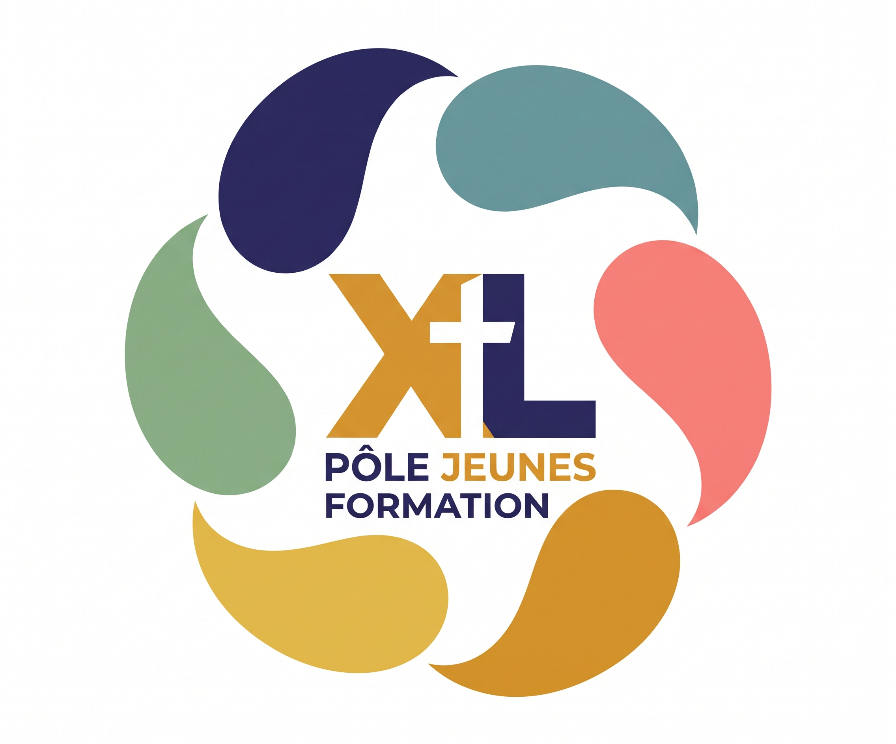

<!DOCTYPE html>
<html lang="fr">
<head>
    <meta charset="UTF-8">
    <meta name="viewport" content="width=device-width, initial-scale=1.0">
    <title>Quiz Sainte-Croix</title>
    <!-- Chargement de React et ReactDOM via CDN -->
    <script crossorigin src="https://unpkg.com/react@18/umd/react.production.min.js"></script>
    <script crossorigin src="https://unpkg.com/react-dom@18/umd/react-dom.production.min.js"></script>
    <!-- Chargement de Babel -->
    <script src="https://unpkg.com/@babel/standalone/babel.min.js"></script>
    <!-- Chargement de Tailwind CSS -->
    <script src="https://cdn.tailwindcss.com"></script>
    <!-- Configuration de Tailwind pour le Dark Mode -->
    <script>
        tailwind.config = {
            darkMode: 'class',
            theme: {
                extend: {}
            }
        }
    </script>
    <style>
        body { margin: 0; padding: 0; }
        .slide-up { animation: slideUp 0.3s ease-out forwards; }
        @keyframes slideUp {
            from { transform: translateY(10px); opacity: 0; }
            to { transform: translateY(0); opacity: 1; }
        }
    </style>
</head>
<body>
    <div id="root"></div>

    <script type="text/babel">
        // =========================================================================
        // 1. BASE DE DONNÉES QCM (48 QUESTIONS SOURCÉES CEC / BIBLE)
        // =========================================================================
        const quizData = {
            doctrine: [
                {
                    question: "Qui est le successeur de Saint Pierre et le chef visible de l'Église catholique sur terre ?",
                    options: [
                        "L'Archevêque de Jérusalem, primat d'Orient",
                        "Le Pape, évêque de Rome et pasteur suprême",
                        "Le Patriarche œcuménique de Constantinople",
                        "Le Président de la Conférence Épiscopale"
                    ],
                    correctIndex: 1,
                    explication: "Le Pape, évêque de Rome et successeur de saint Pierre, est le principe perpétuel et visible et le fondement de l'unité de l'Église (CEC 882)."
                },
                {
                    question: "Quels sont les trois sacrements constitutifs de l'initiation chrétienne ?",
                    options: [
                        "Le Baptême, la Confirmation et l'Eucharistie",
                        "Le Baptême, l'Ordre et le Sacrement du Mariage",
                        "La Réconciliation, l'Eucharistie et l'Onction des malades",
                        "Le Baptême, la Pénitence et la Confirmation"
                    ],
                    correctIndex: 0,
                    explication: "Les sacrements de l'initiation chrétienne – Baptême, Confirmation et Eucharistie – posent les fondements de toute vie chrétienne (CEC 1212)."
                },
                {
                    question: "Quels sacrements sont spécifiquement ordonnés au service de la communion et de la mission ?",
                    options: [
                        "Le Baptême et la Confirmation",
                        "La Pénitence et l'Onction des malades",
                        "Le Sacrement de l'Ordre et le Mariage",
                        "L'Eucharistie et la Réconciliation"
                    ],
                    correctIndex: 2,
                    explication: "L'Ordre et le Mariage sont ordonnés au salut d'autrui et confèrent une mission particulière dans l'Église (CEC 1534)."
                },
                {
                    question: "Selon la définition dogmatique du quatrième Concile du Latran, comment s'exprime le mystère trinitaire ?",
                    options: [
                        "Trois Personnes divines possédant trois natures distinctes",
                        "Trois Personnes distinctes en une seule Essence simple",
                        "Une seule Personne divine manifestée sous trois modes",
                        "Trois émanations successives d'une même Divinité"
                    ],
                    correctIndex: 1,
                    explication: "L'Église confesse un seul vrai Dieu: Trois Personnes, mais une Essence, Substance ou Nature absolument simple (CEC 253 ; DS 804)."
                },
                {
                    question: "Comment le Concile de Chalcédoine (451) définit-il l'union des deux natures dans le Christ ?",
                    options: [
                        "Fusionnées en une nature divine prédominante",
                        "Séparées et indépendantes selon les circonstances",
                        "Sans confusion, sans changement, sans division, sans séparation",
                        "Humaine en apparence, mais exclusivement divine en réalité"
                    ],
                    correctIndex: 2,
                    explication: "Le Christ doit être reconnu en deux natures, sans confusion, sans changement, sans division, sans séparation, réunies en une seule personne (CEC 467 ; DS 301-302)."
                },
                {
                    question: "Selon la doctrine catholique, comment le péché originel est-il qualifié pour la descendance d'Adam ?",
                    options: [
                        "Une faute personnelle transmise par l'exemple",
                        "Un état contracté de privation de la grâce originelle",
                        "Une corruption totale annihilant le libre arbitre",
                        "Une tare biologique transmise par la génération"
                    ],
                    correctIndex: 1,
                    explication: "Le péché originel est un péché 'contracté' et non pas 'commis', un état de privation de la sainteté et de la justice originelles (CEC 404)."
                },
                {
                    question: "Que proclame précisément le dogme de l'Immaculée Conception défini par Pie IX ?",
                    options: [
                        "La conception virginale de Jésus par l'Esprit Saint",
                        "La préservation de Marie du péché originel dès sa conception",
                        "L'assomption corporelle de Marie dans la gloire céleste",
                        "La sanctification immédiate des Apôtres à la Pentecôte"
                    ],
                    correctIndex: 1,
                    explication: "Marie a été, au premier instant de sa conception, préservée intacte de toute souillure du péché originel par une grâce singulière (CEC 491)."
                },
                {
                    question: "Que traduit l'attribution du titre divin 'Seigneur' (Kyrios) à Jésus dans le Nouveau Testament ?",
                    options: [
                        "Un hommage d'honneur accordé aux grands prophètes",
                        "L'affirmation explicite de sa souveraineté divine",
                        "Une revendication d'autorité politique sur Israël",
                        "Une désignation réservée au chef des armées célestes"
                    ],
                    correctIndex: 1,
                    explication: "Dans le Nouveau Testament, le titre 'Seigneur' désigne la divinité même du Dieu d'Israël, et Jésus est reconnu ainsi comme Dieu lui-même (CEC 446)."
                },
                {
                    question: "Selon l'enseignement de Saint Augustin, comment convient-il de définir le terme 'ange' ?",
                    options: [
                        "Ange désigne la nature, et esprit désigne la fonction",
                        "Ange désigne la fonction, et esprit désigne la nature",
                        "Ange désigne l'âme, et esprit désigne le corps glorieux",
                        "Ange désigne la vertu, et esprit désigne la substance"
                    ],
                    correctIndex: 1,
                    explication: "Saint Augustin affirme : 'Ange désigne la fonction, non pas la nature. D'après ce qu'il est, c'est un esprit, d'après ce qu'il fait, c'est un ange' (CEC 329)."
                },
                {
                    question: "Que signifie la définition du Concile de Vienne affirmant que 'l'âme est la forme du corps' ?",
                    options: [
                        "L'âme façonne l'apparence extérieure de la matière",
                        "L'âme demeure une entité captive du corps matériel",
                        "L'âme spirituelle fait du corps matière un corps vivant",
                        "L'âme et le corps constituent deux substances autonomes"
                    ],
                    correctIndex: 2,
                    explication: "L'unité est si profonde que c'est grâce à l'âme spirituelle que le corps constitué de matière est un corps humain et vivant formant une unique nature (CEC 365)."
                },
                {
                    question: "Quel était l'objectif de la descente du Christ aux enfers avant sa Résurrection ?",
                    options: [
                        "Abolir définitivement le lieu de la damnation éternelle",
                        "Accorder une ultime possibilité de salut aux damnés",
                        "Libérer les âmes des justes qui l'avaient précédé",
                        "Soumettre immédiatement les démons au jugement dernier"
                    ],
                    correctIndex: 2,
                    explication: "Jésus n'est pas descendu pour délivrer les damnés ni pour détruire l'enfer, mais pour libérer les justes qui l'avaient précédé dans le séjour des morts (CEC 633)."
                },
                {
                    question: "Quel concile œcuménique a défini le terme 'consubstantiel' (homoousios) pour qualifier le Fils ?",
                    options: [
                        "Le Concile de Trente (1546)",
                        "Le premier Concile de Nicée (325)",
                        "Le Concile de Chalcédoine (451)",
                        "Le deuxième Concile du Vatican (1965)"
                    ],
                    correctIndex: 1,
                    explication: "Le premier Concile œcuménique de Nicée, en 325, confessa que le Fils est de la même substance (consubstantiel) que le Père (CEC 465)."
                }
            ],
            ecritures: [
                {
                    question: "Quel patriarche est qualifié de 'père de tous les croyants' pour sa réponse à l'appel divin ?",
                    options: [
                        "Noé, pour sa fidélité lors du grand Déluge",
                        "Moïse, pour avoir guidé le peuple à travers le désert",
                        "Abraham, pour son obéissance confiante à la promesse",
                        "David, pour avoir unifié les tribus d'Israël"
                    ],
                    correctIndex: 2,
                    explication: "Grâce à sa foi puissante, Abraham est devenu le 'père de tous ceux qui croiraient' (CEC 146 ; Rm 4, 11 ; Gn 12, 1-4)."
                },
                {
                    question: "Par quel intermédiaire Dieu a-t-il révélé la Loi et conclu l'Alliance au Sinaï ?",
                    options: [
                        "Ésaïe, le prophète de l'Alliance nouvelle",
                        "Moïse, le médiateur de l'Ancienne Loi",
                        "Salomon, le roi bâtisseur du Temple",
                        "Josué, le conducteur de l'entrée en Terre Sainte"
                    ],
                    correctIndex: 1,
                    explication: "Dieu conclut avec Israël l'Alliance du Sinaï et lui donna, par Moïse, sa Loi pour qu'il le reconnaisse et le serve (CEC 62 ; Ex 19-20)."
                },
                {
                    question: "À quel souverain Dieu a-t-il promis une royauté permanente préfigurant le Messie ?",
                    options: [
                        "Au roi Saül",
                        "Au roi Hérode",
                        "Au roi Salomon",
                        "Au roi David"
                    ],
                    correctIndex: 3,
                    explication: "Jésus accomplira l'espérance messianique en tant que 'fils de David'. À David, Dieu avait promis une royauté éternelle (CEC 439 ; 2 S 7, 14)."
                },
                {
                    question: "Quel apôtre, d'abord persécuteur des chrétiens, est devenu l'Apôtre des nations ?",
                    options: [
                        "Saint Pierre",
                        "Saint Jean",
                        "Saint Paul (Saul)",
                        "Saint Jacques"
                    ],
                    correctIndex: 2,
                    explication: "Le Christ ressuscité se révèle à Paul sur le chemin de Damas pour qu'il l'annonce parmi les païens (CEC 442 ; Ga 1, 15-16 ; Ac 9)."
                },
                {
                    question: "Combien de livres composent le Canon officiel des Écritures reconnu par l'Église catholique ?",
                    options: [
                        "39 pour l'Ancien et 27 pour le Nouveau Testament",
                        "46 pour l'Ancien et 27 pour le Nouveau Testament",
                        "50 pour l'Ancien et 21 pour le Nouveau Testament",
                        "45 pour l'Ancien et 25 pour le Nouveau Testament"
                    ],
                    correctIndex: 1,
                    explication: "L'Église reçoit et vénère comme inspirés la liste intégrale appelée 'Canon', comprenant 46 livres pour l'Ancien Testament et 27 pour le Nouveau (CEC 120)."
                },
                {
                    question: "Que désigne le principe herméneutique de 'l'analogie de la foi' ?",
                    options: [
                        "La concordance chronologique des récits bibliques",
                        "La cohésion interne des vérités révélées entre elles",
                        "La comparaison méthodique des religions antiques",
                        "La correspondance littérale entre hébreu et grec"
                    ],
                    correctIndex: 1,
                    explication: "Par 'analogie de la foi', l'Église entend la cohésion des vérités de la foi entre elles et dans le projet total de la Révélation (CEC 114)."
                },
                {
                    question: "Que vise le 'sens anagogique' dans l'interprétation spirituelle des Écritures ?",
                    options: [
                        "La reconstitution précise du contexte historique",
                        "L'extraction de règles directrices pour la morale",
                        "La contemplation des réalités orientées vers l'Éternité",
                        "La réfutation logique des hérésies doctrinales"
                    ],
                    correctIndex: 2,
                    explication: "Le sens anagogique permet de voir les événements dans leur signification éternelle, nous conduisant vers notre Patrie céleste (CEC 117)."
                },
                {
                    question: "En exégèse catholique, en quoi consiste la lecture 'typologique' de l'Ancien Testament ?",
                    options: [
                        "À classer les écrits selon leur style typographique",
                        "À discerner dans l'Ancien Testament des figures du Christ",
                        "À déclarer l'Ancien Testament obsolète après l'Évangile",
                        "À ordonner les livres selon leur date de composition"
                    ],
                    correctIndex: 1,
                    explication: "La typologie discerne dans les œuvres de Dieu dans l'Ancienne Alliance des préfigurations de ce que Dieu a accompli en son Fils incarné (CEC 128)."
                },
                {
                    question: "Qui l'Église reconnaît-elle comme l'Auteur principal de la Sainte Écriture ?",
                    options: [
                        "Les prophètes et évangélistes exclusivement",
                        "Dieu, ayant inspiré les hagiographes humains",
                        "L'assemblée réunie lors des conciles œcuméniques",
                        "Le collège des douze Apôtres et leurs successeurs"
                    ],
                    correctIndex: 1,
                    explication: "Dieu est l'Auteur de l'Écriture Sainte. Il a inspiré les auteurs humains en agissant en eux et par eux pour consigner la vérité salutaire (CEC 105)."
                },
                {
                    question: "Pourquoi affirme-t-on que le christianisme n'est pas une 'religion du Livre' ?",
                    options: [
                        "Parce que le texte biblique comporte plusieurs traductions",
                        "Parce qu'il est la religion du Verbe incarné et vivant",
                        "Parce que la lecture des Écritures demeure facultative",
                        "Parce que les Apôtres privilégiaient la tradition orale"
                    ],
                    correctIndex: 1,
                    explication: "Le christianisme est la religion de la 'Parole' de Dieu, non d'un verbe écrit et muet, mais du Verbe incarné et vivant (CEC 108)."
                },
                {
                    question: "À qui revient la charge d'interpréter authentiquement la Parole de Dieu écrite ou transmise ?",
                    options: [
                        "À la conscience individuelle de chaque croyant",
                        "Aux facultés universitaires de théologie",
                        "Au seul Magistère vivant de l'Église",
                        "Aux mouvements prophétiques contemporains"
                    ],
                    correctIndex: 2,
                    explication: "La charge d'interpréter authentiquement la Parole a été confiée au seul Magistère de l'Église, dont l'autorité s'exerce au nom de Jésus-Christ (CEC 85)."
                },
                {
                    question: "Que désigne la 'Tradition apostolique' au côté de l'Écriture Sainte ?",
                    options: [
                        "Les coutumes culturelles du Proche-Orient ancien",
                        "La transmission vivante de l'Évangile dans l'Église",
                        "Un ensemble de textes apocryphes non canoniques",
                        "Les prescriptions rituelles de l'Ancienne Alliance"
                    ],
                    correctIndex: 1,
                    explication: "La transmission vivante, accomplie par la prédication, les exemples et les institutions des apôtres sous l'Esprit Saint, est appelée la Tradition (CEC 76)."
                }
            ],
            pratique: [
                {
                    question: "Quels sont les sept dons du Saint-Esprit reçus par le croyant ?",
                    options: [
                        "Foi, Espérance, Charité, Prudence, Justice, Force, Tempérance",
                        "Pauvreté, Chasteté, Obéissance, Humilité, Douceur, Paix, Joie",
                        "Sagesse, Intelligence, Conseil, Force, Science, Piété, Crainte de Dieu",
                        "Charité, Joie, Paix, Patience, Longanimité, Bonté, Bénignité"
                    ],
                    correctIndex: 2,
                    explication: "Les sept dons du Saint-Esprit soutiennent la vie morale des chrétiens et les rendent dociles aux inspirations divines (CEC 1831 ; Is 11, 1-2)."
                },
                {
                    question: "Quelles sont les trois vertus théologales infusées par Dieu dans l'âme du fidèle ?",
                    options: [
                        "La prudence, la justice et la force",
                        "La foi, l'espérance et la charité",
                        "La pauvreté, la chasteté et l'obéissance",
                        "La sagesse, l'intelligence et le conseil"
                    ],
                    correctIndex: 1,
                    explication: "Les trois vertus théologales adaptent les facultés de l'homme à la participation de la nature divine (CEC 1812-1813)."
                },
                {
                    question: "Quel précepte constitue le premier des Dix Commandements transmis à Moïse ?",
                    options: [
                        "Tu ne tueras point",
                        "Tu ne prononceras pas le nom de Dieu en vain",
                        "Tu n'auras pas d'autres dieux devant moi",
                        "Honore ton père et ta mère"
                    ],
                    correctIndex: 2,
                    explication: "Le premier commandement appelle l'homme à croire en Dieu, à espérer en Lui et à L'aimer par-dessus tout (CEC 2083 ; Ex 20, 2-3)."
                },
                {
                    question: "Quelles sont les trois conditions requises pour qu'un péché soit qualifié de mortel ?",
                    options: [
                        "Matière grave, pleine conscience et entier consentement",
                        "Scandale public, préjudice financier et préméditation",
                        "Infraction à l'Église, atteinte à soi-même et récidive",
                        "Ignorance volontaire, faiblesse morale et intention malveillante"
                    ],
                    correctIndex: 0,
                    explication: "Le péché mortel détruit la charité dans le cœur de l'homme par une infraction grave à la loi de Dieu, commise avec conscience et liberté (CEC 1857)."
                },
                {
                    question: "Quelle juste attitude la foi exige-t-elle envers les biens matériels créés ?",
                    options: [
                        "Les rejeter totalement comme contraires à l'esprit",
                        "En user dans la mesure où ils rapprochent de Dieu",
                        "Les accumuler sans réserve comme signe de bénédiction",
                        "Les utiliser selon son libre arbitre sans référence morale"
                    ],
                    correctIndex: 1,
                    explication: "La foi en Dieu l'Unique nous amène à user des choses créées dans la mesure où cela nous rapproche de Lui et à nous en détacher sinon (CEC 226)."
                },
                {
                    question: "Quelle conduite Jésus enseigne-t-il face aux soucis de la vie quotidienne ?",
                    options: [
                        "Un abandon filial en recherchant d'abord le Royaume",
                        "Un effort continu axé sur l'accumulation de réserves",
                        "Une passivité absolue en attendant une intervention divine",
                        "Un stoïcisme strict ignorant les besoins matériels"
                    ],
                    correctIndex: 0,
                    explication: "Jésus demande un abandon filial à la providence du Père : 'Ne vous inquiétez donc pas... Cherchez d'abord son Royaume et sa justice' (CEC 305 ; Mt 6, 31-33)."
                },
                {
                    question: "Sur quel critère fondamental portera le jugement décrit par Jésus en Matthieu 25 ?",
                    options: [
                        "La récitation exacte des prières liturgiques",
                        "L'amour concret et actif envers les plus démunis",
                        "La maîtrise approfondie des sciences théologiques",
                        "L'observation scrupuleuse du repos du sabbat"
                    ],
                    correctIndex: 1,
                    explication: "Jésus s'identifie aux pauvres de toutes sortes et fait de l'amour actif envers eux la condition de l'entrée dans son Royaume au Jugement (CEC 544 ; Mt 25, 31-46)."
                },
                {
                    question: "Quel modèle de vie spirituelle découle des années cachées de Jésus à Nazareth ?",
                    options: [
                        "L'engagement prioritaire dans les réformes politiques",
                        "La sainteté dans le silence, la famille et le travail",
                        "Le rejet systématique de toute activité séculière",
                        "La recherche d'une solitude absolue au désert"
                    ],
                    correctIndex: 1,
                    explication: "Nazareth est l'école du silence, de la beauté de la vie familiale, et montre la loi sévère et rédemptrice du labeur humain quotidien (CEC 533)."
                },
                {
                    question: "Sur quel principe repose l'éthique chrétienne du respect du monde créé ?",
                    options: [
                        "Le respect de la bonté propre de chaque créature",
                        "L'alignement sur les courants écologiques du moment",
                        "L'exploitation rationnelle des ressources pour le profit",
                        "L'élaboration de lois morales selon l'utilité sociale"
                    ],
                    correctIndex: 0,
                    explication: "Respecter les lois inscrites dans la création et la bonté propre de chaque créature est un principe de sagesse et un fondement de la morale (CEC 339)."
                },
                {
                    question: "Que signifie l'invocation d'origine araméenne 'Maran atha' ?",
                    options: [
                        "Seigneur, prends pitié de nous",
                        "Viens, Seigneur Jésus !",
                        "Gloire à Dieu au plus haut des cieux",
                        "Béni soit celui qui vient au nom du Seigneur"
                    ],
                    correctIndex: 1,
                    explication: "La prière est marquée par le cri plein d'espérance 'Maran atha' (ou 'Marana tha') qui signifie 'Viens, Seigneur !' dans l'attente de son retour (CEC 451 ; 1 Co 16, 22)."
                },
                {
                    question: "Pourquoi le dimanche est-il appelé le 'huitième jour' dans la tradition chrétienne ?",
                    options: [
                        "Parce qu'il correspond à l'ancienne semaine romaine",
                        "Parce qu'il inaugure la création nouvelle par la Résurrection",
                        "Parce qu'il marque la fin symbolique des temps messianiques",
                        "Parce que la Genèse mentionne huit jours de création"
                    ],
                    correctIndex: 1,
                    explication: "Le septième jour achève la première création. Le huitième jour commence la nouvelle création par la Résurrection du Christ, sommet de la Rédemption (CEC 349)."
                },
                {
                    question: "Comment la Vierge Marie accomplit-elle parfaitement l'obéissance de la foi ?",
                    options: [
                        "Par sa retraite contemplative au Temple de Jérusalem",
                        "Par son adhésion confiante : 'Je suis la servante du Seigneur'",
                        "Par la rédaction de cantiques spirituels transmis aux fidèles",
                        "Par son autorité doctrinale exercée auprès des Apôtres"
                    ],
                    correctIndex: 1,
                    explication: "Marie réalise la foi parfaite en accueillant la promesse avec certitude et en donnant son assentiment total comme servante du Seigneur (CEC 148 ; Lc 1, 38)."
                }
            ],
            apologetique: [
                {
                    question: "Comment l'Église établit-elle le rapport entre la foi chrétienne et la raison scientifique ?",
                    options: [
                        "En affirmation d'un conflit insurmontable entre elles",
                        "En séparation stricte excluant toute origine commune",
                        "En reconnaissance d'une harmonie issue d'un unique Dieu",
                        "En subordination de la foi aux théories mouvantes"
                    ],
                    correctIndex: 2,
                    explication: "Puisque le même Dieu révèle les mystères et donne la lumière de la raison, la recherche scientifique méthodique ne s'opposera jamais réellement à la foi (CEC 159)."
                },
                {
                    question: "Comment l'apologétique explique-t-elle que Dieu tolère la présence du mal moral ?",
                    options: [
                        "Par une limitation de sa puissance face à la créature",
                        "Par une volonté délibérée d'éprouver la souffrance humaine",
                        "Par le respect de la liberté dont il sait tirer un bien",
                        "Par un détachement progressif du gouvernement du monde"
                    ],
                    correctIndex: 2,
                    explication: "Dieu ne laisserait jamais le mal exister s'il n'était assez puissant et bon pour faire sortir le bien du mal lui-même, tout en respectant la liberté humaine (CEC 311)."
                },
                {
                    question: "Que désignent les 'preuves de l'existence de Dieu' selon le Catéchisme ?",
                    options: [
                        "Des démonstrations tirées des sciences expérimentales",
                        "Des arguments convergents fondés sur la raison humaine",
                        "Des certitudes d'ordre purement émotionnel et privé",
                        "Des apparitions publiques scientifiquement attestées"
                    ],
                    correctIndex: 1,
                    explication: "Ces 'preuves' ne sont pas au sens des sciences naturelles, mais des arguments convergents (ordre du monde, conscience) qui permettent d'atteindre la certitude (CEC 31)."
                },
                {
                    question: "Quel élément historique s'oppose à l'idée d'une Résurrection inventée par les disciples ?",
                    options: [
                        "L'attente enthousiaste du miracle par les Apôtres",
                        "L'incrédulité et le désarroi initiaux des témoins",
                        "La confirmation du miracle par le Sénat romain",
                        "L'absence totale de doutes chez les Évangélistes"
                    ],
                    correctIndex: 1,
                    explication: "Loin d'une exaltation mystique, les disciples étaient effrayés, ne croyaient pas les saintes femmes au début et Jésus a dû reprocher leur incrédulité (CEC 643)."
                },
                {
                    question: "À qui l'Église attribue-t-elle la responsabilité première de la passion du Christ ?",
                    options: [
                        "Aux seuls dirigeants religieux de Jérusalem",
                        "Au seul représentant de l'autorité romaine Pilate",
                        "À l'ensemble des pécheurs de tous les temps",
                        "Au seul apôtre Judas par sa trahison"
                    ],
                    correctIndex: 2,
                    explication: "L'Église n'a jamais oublié que les pécheurs eux-mêmes furent les auteurs de la passion ; imputer la mort du Christ à tous les Juifs est condamné par Vatican II (CEC 598 ; NA 4)."
                },
                {
                    question: "Quels indices manifestent en l'homme l'existence d'une âme spirituelle ?",
                    options: [
                        "Les seules fonctions biologiques du corps",
                        "La quête de vérité, la conscience et la liberté",
                        "La seule complexité des connexions cérébrales",
                        "L'instinct de conservation propre aux vivants"
                    ],
                    correctIndex: 1,
                    explication: "Avec son sens du bien moral, sa liberté et la voix de sa conscience, l'homme perçoit des signes de son âme spirituelle, irréductible à la seule matière (CEC 33)."
                },
                {
                    question: "Comment la foi explique-t-elle l'existence du mal physique dans la nature ?",
                    options: [
                        "Par un défaut initial dans le plan de la création",
                        "Par la domination exclusive du principe du mal",
                        "Par un monde créé 'en état de voie' vers sa perfection",
                        "Par une illusion liée à la finitude humaine"
                    ],
                    correctIndex: 2,
                    explication: "Dieu a librement créé un monde en devenir ('en état de voie'). Ce devenir comporte l'apparition de certains êtres et la disparition d'autres, d'où le mal physique (CEC 310)."
                },
                {
                    question: "Pourquoi la liturgie chante-t-elle l''heureuse faute' d'Adam (Exsultet) ?",
                    options: [
                        "Parce que la grâce du Christ surpasse le bien perdu",
                        "Parce que le péché était nécessaire à la création",
                        "Parce que la loi ancienne était insuffisante",
                        "Parce que le mal est indifférent aux yeux de Dieu"
                    ],
                    correctIndex: 0,
                    explication: "Rien ne s'oppose à ce que la nature humaine ait été destinée à une fin plus haute après le péché ; la faute a mérité un tel et un si grand Rédempteur (CEC 412)."
                },
                {
                    question: "Quel est le rôle des miracles accomplis par Jésus dans la démarche de foi ?",
                    options: [
                        "Remplacer l'effort personnel de conversion",
                        "Offrir des motifs de crédibilité montrant que la foi est raisonnable",
                        "Contraindre les esprits crédules par le merveilleux",
                        "Servir d'illustrations purement symboliques"
                    ],
                    correctIndex: 1,
                    explication: "Les miracles du Christ sont des signes certains de la Révélation, des 'motifs de crédibilité' montrant que la foi n'est nullement un mouvement aveugle de l'esprit (CEC 156)."
                },
                {
                    question: "Que professe la foi chrétienne concernant la création du monde (ex nihilo) ?",
                    options: [
                        "Que le monde est une émanation nécessaire de Dieu",
                        "Que le Bien et le Mal sont deux principes éternels",
                        "Que Dieu a créé l'univers librement à partir de rien",
                        "Que la matière préexistait au travail du Créateur"
                    ],
                    correctIndex: 2,
                    explication: "La foi affirme que Dieu n'a pas besoin de matière préexistante ni n'émane de lui-même le monde, mais qu'il crée librement 'de rien' (CEC 296)."
                },
                {
                    question: "Quelle est la portée apologétique de la constatation du 'tombeau vide' ?",
                    options: [
                        "Une preuve scientifique directe de la résurrection",
                        "Un signe essentiel ouvrant les disciples à la foi",
                        "Une légende élaborée au cours des siècles",
                        "Une preuve de l'enlèvement du corps par des proches"
                    ],
                    correctIndex: 1,
                    explication: "Le sépulcre vide n'est pas en soi une preuve directe, mais il a constitué un signe essentiel et le premier pas vers la foi en la Résurrection pour les apôtres (CEC 640)."
                },
                {
                    question: "Que condamne l'Église lorsqu'elle rejette le 'millénarisme' ?",
                    options: [
                        "L'organisation du calendrier liturgique annuel",
                        "La prétention de réaliser le Royaume ultime dans l'histoire",
                        "L'étude des prophéties sur la fin des temps",
                        "La célébration des jubilés tous les mille ans"
                    ],
                    correctIndex: 1,
                    explication: "L'imposture antichristique est un messianisme sécularisé prétendant réaliser sur terre l'espérance qui ne peut s'achever qu'au-delà, par le Jugement divin (CEC 676)."
                }
            ]
        };

        const qcmThemes = [
            { id: 'doctrine', label: 'Doctrine & Église', color: 'bg-blue-600' },
            { id: 'ecritures', label: 'Les Écritures', color: 'bg-emerald-600' },
            { id: 'pratique', label: 'La Vie Pratique', color: 'bg-purple-600' },
            { id: 'apologetique', label: 'Apologétique', color: 'bg-rose-600' },
            { id: 'mix', label: 'Mix QCM (Aléatoire)', color: 'bg-gray-800 dark:bg-gray-700' }
        ];

        // =========================================================================
        // 2. BASE DE DONNÉES QUESTIONS POUR UN CHAMPION (7 GRANDES CATÉGORIES / 120 QUESTIONS)
        // Format compact : [Sujet, [Indice1, Indice2, Indice3, Indice4], Réponse]
        // =========================================================================
        const rawQpucCategories = [
            {
                id: "cat1",
                title: "1. Pères de l'Église, Fondateurs et Docteurs",
                subtitle: "Grands fondateurs anciens & figures féminines Docteurs de l'Église",
                items: [
                    [
                        "Saint Augustin d'Hippone (IVe – Ve siècle)",
                        [
                            "Né en Afrique du Nord au IVe siècle, je cherche longtemps la vérité dans le manichéisme et le néoplatonisme avant de me convertir.",
                            "Ma conversion s'accomplit sous l'influence des prières de ma mère, sainte Monique, et des prédications de saint Ambroise.",
                            "Devenu évêque en Numidie, je défends la doctrine de la grâce contre l'hérésie pélagienne et rédige La Cité de Dieu pour expliquer le sens chrétien de l'histoire.",
                            "Docteur de l'Église surnommé le « Docteur de la grâce », je raconte mon itinéraire spirituel dans mes célèbres Confessions, je suis saint..."
                        ],
                        "SAINT AUGUSTIN"
                    ],
                    [
                        "Saint Benoît de Nursie (Ve – VIe siècle)",
                        [
                            "Au VIe siècle, fuyant la décadence morale de Rome, je me retire d'abord en ermite dans une grotte à Subiaco pour me consacrer entièrement à la prière.",
                            "Je fonde ensuite le monastère du Mont-Cassin et rédige une Règle devenue le fondement du monachisme occidental.",
                            "Cette règle est résumée par la devise Ora et labora (« Prie et travaille »), qui unit contemplation liturgique et travail manuel.",
                            "Proclamé saint patron de l'Europe par Paul VI en 1964, je suis saint..."
                        ],
                        "SAINT BENOÎT"
                    ],
                    [
                        "Saint François d'Assise (XIIe – XIIIe siècle)",
                        [
                            "Fils d'un riche marchand drapier d'Ombrie au XIIIe siècle, je renonce publiquement à mon héritage pour épouser « Dame Pauvreté » et vivre littéralement selon l'Évangile.",
                            "Au crucifix de Saint-Damien, j'entends le Christ me demander de réparer son Église en ruine, ce qui me conduit à fonder l'ordre des Frères mineurs.",
                            "Je prêche la paix jusqu'au sultan d'Égypte et deviens le premier saint connu à avoir reçu les stigmates du Christ.",
                            "Auteur du Cantique des créatures, je suis saint..."
                        ],
                        "SAINT FRANÇOIS D'ASSISE"
                    ],
                    [
                        "Saint Dominique de Guzmán (XIIe – XIIIe siècle)",
                        [
                            "Chanoine castillan du XIIIe siècle, je suis bouleversé par l'essor de l'hérésie cathare dans le sud de la France.",
                            "Je comprends que seule une prédication fondée sur la pauvreté évangélique et une solide formation théologique peut ramener les âmes à la vérité.",
                            "Je fonde l'Ordre des Prêcheurs, dont la devise est Veritas (« Vérité »), et diffuse avec ferveur la prière contemplative du Rosaire.",
                            "Fondateur des Dominicains, je suis saint..."
                        ],
                        "SAINT DOMINIQUE"
                    ],
                    [
                        "Saint Thomas d'Aquin (XIIIe siècle)",
                        [
                            "Religieux dominicain italien du XIIIe siècle, je consacre toute mon intelligence à démontrer l'harmonie profonde entre la foi révélée et la raison humaine.",
                            "Je m'appuie notamment sur la philosophie d'Aristote pour exposer méthodiquement toute la doctrine catholique sur Dieu, la morale et les sacrements.",
                            "Je compose également les hymnes eucharistiques de la fête du Corpus Christi, comme le célèbre Tantum Ergo.",
                            "Surnommé le « Docteur angélique » et auteur de la Somme théologique, je suis saint..."
                        ],
                        "SAINT THOMAS D'AQUIN"
                    ],
                    [
                        "Sainte Catherine de Sienne (XIVe siècle)",
                        [
                            "Tertiaire dominicaine italienne du XIVe siècle, je mène une vie intense de prière mystique, d'austérité et de service auprès des pauvres et des pestiférés.",
                            "Je reçois les stigmates invisibles du Christ et suis animée d'un amour brûlant pour l'Église que j'appelle « le doux Christ sur la terre ».",
                            "Je parcours l'Europe pour réconcilier les cités et convaincre le pape Grégoire XI de quitter Avignon pour revenir à Rome.",
                            "Auteure du Dialogue et proclamée Docteur de l'Église en 1970, je suis sainte..."
                        ],
                        "SAINTE CATHERINE DE SIENNE"
                    ],
                    [
                        "Sainte Thérèse d'Avila (XVIe siècle)",
                        [
                            "Religieuse espagnole du XVIe siècle, je réforme l'ordre du Carmel pour le ramener à sa rigueur primitive de pauvreté, de silence et d'oraison continue.",
                            "Dans mes ouvrages majeurs comme Le Château intérieur, je décris les étapes de l'union de l'âme avec Dieu par la prière mentale.",
                            "Je définis l'oraison comme un « commerce d'amitié » avec Celui dont nous nous savons aimés.",
                            "Première femme proclamée Docteur de l'Église avec Catherine de Sienne en 1970, je suis sainte..."
                        ],
                        "SAINTE THÉRÈSE D'AVILA"
                    ],
                    [
                        "Sainte Jeanne d'Arc (XVe siècle)",
                        [
                            "Jeune paysanne lorraine du XVe siècle, j'entends dès l'âge de treize ans les voix de saint Michel, sainte Catherine et sainte Marguerite.",
                            "Ces voix me confient la mission divine de libérer le royaume de France et de faire sacrer le dauphin.",
                            "Portant un étendard orné des noms Jésus Maria, je subis un procès inique à Rouen où je témoigne avec une lucidité théologique remarquable avant d'être brûlée vive à dix-neuf ans.",
                            "Canonisée en 1920 et sainte patronne secondaire de la France, je suis sainte..."
                        ],
                        "SAINTE JEANNE D'ARC"
                    ],
                    [
                        "Sainte Thérèse de l'Enfant-Jésus (XIXe siècle)",
                        [
                            "Entrée au Carmel de Normandie à quinze ans à la fin du XIXe siècle, je comprends que ma vocation au cœur de l'Église est d'être l'amour.",
                            "J'offre chaque petit sacrifice quotidien pour le salut des âmes et le soutien des missionnaires.",
                            "J'enseigne la « petite voie » de l'enfance spirituelle, faite d'abandon total et de confiance absolue en la miséricorde divine.",
                            "Auteure d'Histoire d'une âme et proclamée Docteur de l'Église par Jean-Paul II en 1997, je suis sainte..."
                        ],
                        "SAINTE THÉRÈSE DE LISIEUX"
                    ],
                    [
                        "Sainte Faustine Kowalska (XXe siècle)",
                        [
                            "Religieuse polonaise de la Congrégation des Sœurs de Notre-Dame de la Miséricorde dans les années 1930, je reçois des révélations privées du Christ.",
                            "Jésus me demande d'être l'apôtre et la secrétaire de son infinie Miséricorde, ce que je consigne dans mon Petit Journal.",
                            "Sur sa demande, je fais peindre l'icône du Christ d'où jaillissent deux rayons rouge et pâle et je promeus le chapelet de la Miséricorde divine.",
                            "Canonisée en l'an 2000 lors de l'institution du dimanche de la Miséricorde, je suis sainte..."
                        ],
                        "SAINTE FAUSTINE"
                    ]
                ]
            },
            {
                id: "cat2",
                title: "2. Missionnaires, Pasteurs et Témoins contemporains",
                subtitle: "Apôtres de la charité, missionnaires & saints des XXe–XXIe siècles",
                items: [
                    [
                        "Saint Ignace de Loyola (XVIe siècle)",
                        [
                            "Ancien officier basque du XVIe siècle, je vis une profonde conversion durant ma convalescence après une blessure de guerre à Pampelune.",
                            "J'y découvre le discernement des esprits entre consolation et désolation et rédige les Exercices spirituels.",
                            "Je fonde la Compagnie de Jésus, vouée à l'évangélisation, à l'éducation et à l'obéissance directe au Pape.",
                            "Fondateur des Jésuites dont la devise est Ad majorem Dei gloriam, je suis saint..."
                        ],
                        "SAINT IGNACE DE LOYOLA"
                    ],
                    [
                        "Saint François Xavier (XVIe siècle)",
                        [
                            "Compagnon de la première heure d'Ignace de Loyola au XVIe siècle, je réponds à l'appel missionnaire en partant évangéliser l'Asie.",
                            "Je parcours les terres de Goa en Inde jusqu'au Japon où je fonde les premières communautés chrétiennes.",
                            "J'apprends les langues locales, traduis le Credo et les commandements, et meurs d'épuisement sur l'île de Sancian aux portes de la Chine.",
                            "Co-patron des missions avec sainte Thérèse de Lisieux, je suis saint..."
                        ],
                        "SAINT FRANÇOIS XAVIER"
                    ],
                    [
                        "Saint Vincent de Paul (XVIIe siècle)",
                        [
                            "Prêtre français du XVIIe siècle, je découvre la misère matérielle et spirituelle des campagnes et des galériens.",
                            "Cette rencontre me pousse à voir le visage du Christ souffrant dans chaque pauvre et à fonder la Congrégation de la Mission (les Lazaristes).",
                            "Je fonde également les Filles de la Charité avec sainte Louise de Marillac pour servir les malades et les enfants abandonnés en dehors de la clôture monastique.",
                            "Apôtre de la charité organisée, je suis saint..."
                        ],
                        "SAINT VINCENT DE PAUL"
                    ],
                    [
                        "Saint Jean-Marie Vianney (XIXe siècle)",
                        [
                            "Prêtre français du XIXe siècle doté d'une formation intellectuelle modeste, je suis nommé dans une petite paroisse déchristianisée de l'Ain.",
                            "J'y ravive la foi par ma pauvreté, ma prière devant le Saint-Sacrement et mes catéchismes simples mais profonds.",
                            "Ma réputation de discernement attire des foules de toute l'Europe, m'amenant à passer jusqu'à seize heures par jour au confessionnal.",
                            "Déclaré saint patron de tous les curés du monde, je suis saint..."
                        ],
                        "SAINT JEAN-MARIE VIANNEY (LE CURÉ D'ARS)"
                    ],
                    [
                        "Saint Jean Bosco (XIXe siècle)",
                        [
                            "Prêtre piémontais du XIXe siècle, je me consacre aux jeunes ouvriers et orphelins livrés à la rue dans le Turin de la révolution industrielle.",
                            "Pour les éduquer en bons chrétiens et honnêtes citoyens, je développe le « système préventif », fondé sur la raison, la religion et l'affection.",
                            "Je fonde la congrégation des Salésiens pour pérenniser cette œuvre éducative auprès de la jeunesse défavorisée.",
                            "Apôtre de la jeunesse et éducateur hors pair, je suis saint..."
                        ],
                        "SAINT JEAN BOSCO (DON BOSCO)"
                    ],
                    [
                        "Saint Maximilien Kolbe (XXe siècle)",
                        [
                            "Prêtre franciscain conventuel polonais du XXe siècle, je fonde la « Milice de l'Immaculée » et utilise la presse et la radio pour rayonner la foi mariale.",
                            "Arrêté par la Gestapo et déporté à Auschwitz en 1941, je témoigne de la charité évangélique au cœur de l'enfer concentrationnaire.",
                            "J'offre volontairement ma vie à la place d'un père de famille condamné à mourir de faim dans le bunker.",
                            "Canonisé comme « martyr de la charité » par Jean-Paul II en 1982, je suis saint..."
                        ],
                        "SAINT MAXIMILIEN KOLBE"
                    ],
                    [
                        "Sainte Thérèse-Bénédicte de la Croix (XXe siècle)",
                        [
                            "Philosophe allemande d'origine juive et disciple d'Edmund Husserl, je me convertis au catholicisme en 1922 après avoir lu l'autobiographie de sainte Thérèse d'Avila.",
                            "Entrée au Carmel de Cologne, je mets ma pensée philosophique au service de la foi chrétienne.",
                            "Je suis arrêtée par les nazis en représailles d'une protestation des évêques néerlandais et gazée à Auschwitz-Birkenau en 1942.",
                            "Co-patronne de l'Europe canonisée en 1998, je suis sainte..."
                        ],
                        "SAINTE EDITH STEIN (THÉRÈSE-BÉNÉDICTE DE LA CROIX)"
                    ],
                    [
                        "Saint Padre Pio (XXe siècle)",
                        [
                            "Prêtre capucin italien du XXe siècle, je passe presque toute ma vie religieuse au couvent de San Giovanni Rotondo.",
                            "Je porte dans ma chair pendant cinquante ans les stigmates douloureux de la Passion du Christ.",
                            "Consacrant mes journées à la messe, au confessionnal et à la direction spirituelle, je fonde également la « Maison du Soulagement de la Souffrance ».",
                            "Canonisé en 2002, je suis saint..."
                        ],
                        "SAINT PADRE PIO"
                    ],
                    [
                        "Sainte Mère Teresa de Calcutta (XXe siècle)",
                        [
                            "Religieuse d'origine albanaise, je quitte l'enseignement en 1946 après avoir entendu « l'appel dans l'appel » du Christ en croix disant « J'ai soif ».",
                            "Je fonde les Missionnaires de la Charité à Calcutta pour recueillir les mourants, les lépreux et les abandonnés.",
                            "Je vis intérieurement une longue « nuit de la foi » offerte en union avec la souffrance du Christ au service des plus pauvres.",
                            "Prix Nobel de la paix 1979 et canonisée en 2016, je suis sainte..."
                        ],
                        "SAINTE MÈRE TERESA"
                    ],
                    [
                        "Saint Jean-Paul II (XXe – XXIe siècle)",
                        [
                            "Premier pape non italien depuis plus de quatre siècles, élu en 1978, j'inaugure mon pontificat par l'appel « N'ayez pas peur ! ».",
                            "Je parcours le monde entier pour annoncer l'Évangile, promulgue le Catéchisme de l'Église catholique et développe la « théologie du corps ».",
                            "J'institue les Journées Mondiales de la Jeunesse et pardonne publiquement à l'homme qui a tenté de m'assassiner en 1981.",
                            "Pape polonais canonisé en 2014, je suis saint..."
                        ],
                        "SAINT JEAN-PAUL II"
                    ]
                ]
            },
            {
                id: "cat3",
                title: "3. Catéchisme (CEC) : Foi et Liturgie",
                subtitle: "La Profession de la Foi & la Célébration du Mystère Chrétien",
                items: [
                    [
                        "Concept doctrinal fondamental",
                        [
                            "Je suis l'acte libre et souverain par lequel Dieu communique sa propre gloire et sa vie bienheureuse à des créatures intelligentes et libres.",
                            "Selon le Catéchisme (n° 51-53), je ne me réalise pas en un seul instant mais selon une pédagogie progressive faite d'alliances successives avec Noé, Abraham et Moïse.",
                            "Je trouve ma plénitude et mon achèvement définitif en Jésus-Christ, Verbe fait chair, si bien qu'aucune nouvelle manifestation publique de Dieu n'est à attendre avant son retour glorieux.",
                            "Souvent distinguée de la simple connaissance naturelle de Dieu par la raison, je suis le fondement même de l'obéissance de la foi par laquelle l'homme s'abandonne tout entier à Dieu."
                        ],
                        "La Révélation divine (ou la Révélation)"
                    ],
                    [
                        "Saint Père de l'Église (Missions et œuvres)",
                        [
                            "Né au IVe siècle à Thagaste en Afrique du Nord, je mène une jeunesse ardente, marquée par la recherche passionnée de la vérité à travers la philosophie et le manichéisme, avant ma conversion à Milan.",
                            "Devenu évêque d'Hippone, je consacre mon immense œuvre théologique à combattre les hérésies de mon temps, notamment le donatisme sur l'unité de l'Église et le pélagianisme sur la grâce.",
                            "Dans le Catéchisme, je suis fréquemment cité pour ma contemplation du mystère trinitaire et ma formule « Tu nous as faits pour Toi, Seigneur, et notre cœur est sans repos tant qu'il ne repose en Toi » (n° 30).",
                            "Auteur des Confessions et de La Cité de Dieu, je suis l'un des quatre grands Docteurs de l'Église d'Occident."
                        ],
                        "Saint Augustin (d'Hippone)"
                    ],
                    [
                        "Sainte Docteur de l'Église (Mission, foi et œuvre)",
                        [
                            "Religieuse carmélite espagnole du XVIe siècle, ma rencontre décisive avec le Christ souffrant me pousse à entreprendre une profonde réforme de mon ordre pour revenir à l'austérité et à la prière.",
                            "Animée d'une foi brûlante et d'un sens aigu de l'Église, je parcours les routes d'Espagne pour fonder dix-sept monastères malgré les incompréhensions, la maladie et les persécutions.",
                            "Le Catéchisme me cite dès son prologue (n° 27) et dans son enseignement sur l'union à Dieu (n° 256) pour rappeler que le chrétien qui s'attache au Christ possède tout : « Dieu seul suffit ».",
                            "Auteure du Château intérieur et du Chemin de perfection, j'ai été proclamée en 1970 première femme Docteur de l'Église universelle."
                        ],
                        "Sainte Thérèse d'Avila (ou Thérèse de Jésus)"
                    ],
                    [
                        "Saint Apôtre et Témoin (Foi, mission et œuvre)",
                        [
                            "Pharisien zélé et citoyen romain né à Tarse, je persécute les premiers disciples avant que le Ressuscité ne me terrasse sur le chemin de Damas et ne m'appelle à Son service.",
                            "Converti et baptisé, j'embrasse avec une ardeur indomptable ma mission d'« Apôtre des nations », entreprenant de grands voyages missionnaires autour du bassin méditerranéen.",
                            "Le Catéchisme s'appuie constamment sur mes treize épîtres pour exposer le mystère de l'Église comme Corps mystique du Christ (n° 789), la justification par la grâce et la résurrection.",
                            "Martyre à Rome sous l'empereur Néron où je fus décapité, je suis traditionnellement représenté avec une épée et un livre, formant avec Saint Pierre les deux colonnes de l'Église."
                        ],
                        "Saint Paul (de Tarse)"
                    ],
                    [
                        "Sainte Missionnaire et Docteur (Foi, démarche et œuvre)",
                        [
                            "Entrée dès l'âge de quinze ans au Carmel de Lisieux à la fin du XIXe siècle, je vis une existence cachée et simple, marquée par la maladie et une profonde « nuit de la foi ».",
                            "Refusant tout découragement face à ma petitesse spirituelle, je découvre dans les Écritures ma « petite voie » d'enfance spirituelle, faite de confiance et d'abandon total à la Miséricorde.",
                            "Bien que cloîtrée, je suis animée d'un zèle brûlant pour le salut des âmes, proclamant que ma vocation est d'être « l'Amour au cœur de l'Église » et offrant mes prières pour les missionnaires.",
                            "Citée dans le Catéchisme pour illustrer la communion des saints et la charité (n° 826, 956), j'ai été proclamée patronne des missions et Docteur de l'Église en 1997."
                        ],
                        "Sainte Thérèse de l'Enfant-Jésus (ou Sainte Thérèse de Lisieux)"
                    ],
                    [
                        "Saint Docteur de l'Église (Mission, foi et œuvre)",
                        [
                            "Né en Italie au XIIIe siècle au sein d'une noble famille, j'entre chez les Frères Prêcheurs (dominicains) contre l'avis de mes parents, qui me séquestrent de force pendant plus d'un an.",
                            "Surnommé le « Docteur angélique », je consacre ma vie universitaire à Paris et en Italie à harmoniser la foi chrétienne et la philosophie d'Aristote.",
                            "Le Catéchisme cite fréquemment mon œuvre monumentale, notamment pour exposer les « cinq voies » permettant de démontrer rationnellement l'existence de Dieu (n° 36-38).",
                            "Auteur de la monumentale Somme théologique et poète des offices du Saint-Sacrement, je suis l'un des plus grands théologiens de l'histoire de l'Église : qui suis-je ?"
                        ],
                        "Saint Thomas d'Aquin"
                    ],
                    [
                        "Origine de la condition humaine",
                        [
                            "Créé par Dieu à son image et à sa ressemblance, l'être humain est constitué d'un corps matériel et d'une âme spirituelle immortelle, doté d'une intelligence et d'une liberté authentiques.",
                            "Par l'influence d'une tentation extérieure, nos premiers parents ont abusé de leur liberté en doutant de la parole divine et en voulant s'affranchir de leur condition de créatures.",
                            "Selon le Catéchisme (n° 396-409), cet acte de rupture entraîne la perte de la sainteté originelle et transmet à l'ensemble de l'humanité une nature blessée et sujette à la mort.",
                            "Comment nomme-t-on cette faute inaugurale de l'humanité dont nous portons les blessures, et qui rend indispensable la rédemption par le Christ ?"
                        ],
                        "Le péché originel"
                    ],
                    [
                        "Saint Père de l'Église (Mission, foi et œuvre)",
                        [
                            "Disciple de saint Polycarpe de Smyrne, qui avait lui-même connu l'apôtre Jean, je me situe dans la ligne directe de la transmission apostolique.",
                            "Établi comme évêque de Lyon (Lugdunum) au IIe siècle, je combats avec rigueur les hérésies dualistes de mon époque, en particulier le gnosticisme qui méprise la matière.",
                            "Le Catéchisme (n° 526, 760) cite fréquemment ma célèbre vision théologique selon laquelle « la gloire de Dieu, c'est l'homme vivant, et la vie de l'homme, c'est la vision de Dieu ».",
                            "Auteur du grand traité apologétique Contre les hérésies (Adversus haereses), je suis l'un des plus illustres Pères de l'Église des premiers siècles : qui suis-je ?"
                        ],
                        "Saint Irénée de Lyon"
                    ],
                    [
                        "Privilèges et mission de la Vierge Marie",
                        [
                            "Je suis l'humble jeune fille de Nazareth, fiancée à Joseph, dont le « oui » libre et total lors de l'Annonciation renverse la désobéissance d'Ève.",
                            "Proclamée « Mère de Dieu » (Theotokos) par le concile d'Éphèse en 431, ma maternité divine découle du fait que mon fils unique est l'unique personne divine du Verbe fait chair.",
                            "Le Catéchisme (n° 487-507) met en lumière les privilèges uniques de ma foi : préservée de toute tache de péché dès ma conception et élevée corps et âme dans la gloire du Ciel.",
                            "Modèle achevé de l'Église, à la fois vierge et mère, quel est le nom de cette sainte entre toutes ?"
                        ],
                        "La Vierge Marie (ou Marie)"
                    ],
                    [
                        "L'horizon ultime de la foi chrétienne",
                        [
                            "Nous constituons les ultimes articles de la profession de foi contenue dans le Symbole des Apôtres et couronnent l'ensemble de la doctrine catholique.",
                            "Selon le Catéchisme (n° 988-1004 et 1020-1050), nous affirmons qu'à la fin des temps, non seulement l'âme humaine vivra éternellement, mais que « ce corps corruptible revêtira l'incorruptibilité ».",
                            "Cette promesse repose tout entière sur la résurrection du Christ lui-même, premier-né d'entre les morts, garantissant que tous ressusciteront avec leur propre corps.",
                            "Portant l'espérance de la communion définitive et bienheureuse avec la Sainte Trinité dans la vision béatifique, comment nomme-t-on ces vérités ultimes sur le destin de l'homme ?"
                        ],
                        "La résurrection de la chair et la vie éternelle (ou Les fins dernières / La vie éternelle)"
                    ],
                    [
                        "Définition générale de la liturgie",
                        [
                            "Je désigne étymologiquement un « service de la part du peuple et en faveur du peuple », mais dans la tradition chrétienne, je deviens l'œuvre du Christ tout entier, Tête et Corps.",
                            "Selon le Catéchisme (n° 1066-1070), je ne suis pas une simple réunion pieuse ou une invention humaine, mais l'exercice de la fonction sacerdotale de Jésus-Christ.",
                            "En moi, par des signes sensibles, la sanctification de l'homme est signifiée et réalisée, et le culte public intégral est rendu à Dieu par le Corps mystique du Christ.",
                            "Sommet vers lequel tend l'action de l'Église et en même temps source d'où découle toute sa force, comment nomme-t-on cette célébration officielle du mystère du salut ?"
                        ],
                        "La liturgie (ou la sainte liturgie)"
                    ],
                    [
                        "Saint Pape et réformateur liturgique",
                        [
                            "Élu pape au début du XXe siècle, mon pontificat est marqué par la lutte contre le modernisme et la devise « Tout restaurer dans le Christ » (Instaurare omnia in Christo).",
                            "Préoccupé par la piété des fidèles, j'abaisse l'âge de la première communion pour les enfants afin qu'ils reçoivent le pain eucharistique dès l'âge de raison.",
                            "Je marque profondément l'histoire liturgique de l'Église en réformant la musique sacrée (chant grégorien) et en encourageant la participation active des fidèles.",
                            "Canonisé en 1954, quel pape suis-je ?"
                        ],
                        "Saint Pie X (Giuseppe Sarto)"
                    ],
                    [
                        "Saint Père de l'Église et docteur de la liturgie romaine",
                        [
                            "Né à Rome au VIe siècle au sein d'une noble famille, j'exerce d'abord de hautes charges civiles avant de tout abandonner pour fonder des monastères et devenir moine.",
                            "Élu pape en 590, je gouverne l'Église avec un immense zèle missionnaire, tout en réorganisant les patrimoines et en écrivant des traités spirituels majeurs.",
                            "La tradition liturgique m'attribue une influence considérable sur la fixation de la liturgie romaine, ainsi que la codification du chant sacré qui porte mon nom.",
                            "Reconnu comme l'un des grands Docteurs de l'Église d'Occident, quel pape suis-je ?"
                        ],
                        "Saint Grégoire le Grand (Grégoire Ier)"
                    ],
                    [
                        "Source et sommet de la vie chrétienne",
                        [
                            "Institué par Jésus lors du Jeudi saint, la veille de sa Passion, je suis le mémorial de sa Pâque, c'est-à-dire de sa mort et de sa résurrection rendues présentes.",
                            "Par la consécration du prêtre, la substance du pain et du vin est entièrement convertie en la substance du Corps et du Sang du Christ.",
                            "Le Catéchisme (n° 1324-1419) proclame que je suis le centre et le point culminant de toute la vie de l'Église, contenant tout le bien spirituel de l'Église, le Christ lui-même.",
                            "Quel est ce sacrement suprême de l'autel ?"
                        ],
                        "L'Eucharistie (ou la Sainte Eucharistie / la sainte Messe)"
                    ],
                    [
                        "Le Temps liturgique et le Calendrier",
                        [
                            "Je ne suis pas une simple commémoration nostalgique du passé, mais la célébration mystique des mystères de la vie du Christ déployés au fil des mois.",
                            "Je commence par l'Avent et l'attente du Messie, traverse Noël, le Temps Ordinaire, le Carême, le Triduum pascal, pour culminer dans la joie de la Résurrection et de la Pentecôte.",
                            "Le Catéchisme (n° 1168-1173) montre comment l'Église rythme ainsi l'année pour faire vivre aux fidèles l'ensemble du mystère de la rédemption.",
                            "Quel est le nom de ce cycle cultuel annuel qui structure la prière et la liturgie de l'Église ?"
                        ],
                        "L'année liturgique (ou le cycle liturgique)"
                    ],
                    [
                        "Le Sacrement de l'Onction des malades",
                        [
                            "Longtemps appelé « extrême-onction », je ne suis plus réservé aux seuls instants de l'agonie imminente, mais proposé à tout chrétien dont la santé commence à être dangereusement atteinte.",
                            "Par l'onction d'huile bénie et la prière fervente des prêtres, je confère au malade la grâce d'un réconfort, d'une paix et d'un courage spirituel face à l'épreuve.",
                            "Le Catéchisme (n° 1514-1532) enseigne que j'unis le malade à la passion du Christ pour son propre bien et pour celui de toute l'Église.",
                            "Second sacrement de guérison, quel est mon nom ?"
                        ],
                        "L'onction des malades"
                    ],
                    [
                        "Saint Curé de paroisse et modèle des confesseurs",
                        [
                            "Né dans une famille modeste de la Loire en France, je surmonte de grandes difficultés intellectuelles pour achever mes études avant d'être nommé dans un petit village isolé.",
                            "Durant des décennies, je transforme ma paroisse par un ascétisme rigoureux, une prière incessante et un ministère de la confession exténuant où je passe des heures chaque jour.",
                            "Le Catéchisme et la spiritualité sacerdotale voient en moi le modèle absolu du prêtre séculier entièrement donné au salut des âmes et à l'amour de l'Eucharistie.",
                            "Proclamé saint patron de tous les prêtres du monde par Pie XI, qui suis-je ?"
                        ],
                        "Saint Jean-Marie Vianney (le Curé d'Ars)"
                    ],
                    [
                        "La Liturgie des Heures",
                        [
                            "Je ne me réduis pas à la messe dominicale : je suis la prière publique et officielle de l'Église qui sanctifie le cours des différentes heures du jour et de la nuit.",
                            "Composée principalement de psaumes, d'hymnes et de lectures bibliques, je suis confiée non seulement aux prêtres et aux religieux, mais recommandée à tous les fidèles baptisés.",
                            "Le Catéchisme (n° 1174-1178) enseigne que je prolonge la prière du Christ lui-même qui intercède sans cesse auprès du Père pour le monde.",
                            "Comment nomme-t-on cette prière quotidienne de l'Église appelée aussi bréviaire ou office divin ?"
                        ],
                        "La Liturgie des Heures (ou l'Office divin)"
                    ],
                    [
                        "Les Lieux et symboles liturgiques",
                        [
                            "Je désigne à la fois la pierre sainte où s'accomplit le sacrifice eucharistique et le symbole visible du Christ lui-même, pierre angulaire.",
                            "Autour de moi s'articulent l'ambon pour la proclamation de la Parole de Dieu, le siège présidentiel pour le prêtre, et le tabernacle pour la conservation de l'Eucharistie.",
                            "Le Catéchisme (n° 1179-1186) souligne que l'église, lieu de rassemblement de la communauté, n'est pas un simple local profane, mais la maison de Dieu sur terre.",
                            "Comment appelle-t-on la table sacrée située au cœur du sanctuaire ?"
                        ],
                        "L'autel"
                    ],
                    [
                        "Les Rites liturgiques et la catholicité",
                        [
                            "Nous exprimons la merveilleuse diversité et la richesse de l'Église universelle dans sa manière de célébrer un seul et même mystère du Christ à travers différentes traditions historiques.",
                            "Parmi nous figurent le rite romain en Occident, mais aussi les rites byzantin, maronite, copte, syriaque, arménien ou chaldéen en Orient.",
                            "Le Catéchisme (n° 1200-1209) enseigne que ces traditions liturgiques légitimes ne nuisent en rien à l'unité de l'Église, mais manifestent au contraire sa catholicité.",
                            "Comment nomme-t-on ces différentes familles liturgiques reconnues au sein de l'Église catholique ?"
                        ],
                        "Les rites liturgiques (ou les traditions liturgiques)"
                    ]
                ]
            },
            {
                id: "cat4",
                title: "4. Sacrements et Vie dans l'Esprit Saint",
                subtitle: "Théologie des Sacrements & Dons et Fruits de l'Esprit Saint",
                items: [
                    [
                        "Le principe sacramentel et l'efficacité (ex opere operato)",
                        [
                            "Selon la théologie catholique rappelée par le Catéchisme, nous ne sommes pas de simples symboles didactiques, mais des causes instrumentales efficaces de la grâce divine que nous signifions.",
                            "Notre efficacité propre ne dépend pas de la sainteté personnelle ou morale du ministre qui nous administre, mais de l'action souveraine et objective du Christ et de l'Esprit Saint.",
                            "La tradition théologique exprime cette réalité par la formule latine indiquant que le sacrement agit par le fait même où l'action rituelle est accomplie, sans obstacle du receveur.",
                            "Quelle expression latine désigne cette efficacité objective des sacrements (ex opere...) ?"
                        ],
                        "Ex opere operato (ou « par le fait même que l'action est accomplie »)"
                    ],
                    [
                        "Le sacrement du Baptême et ses préfigurations",
                        [
                            "Dans l'Ancien Testament, la traversée de la mer Rouge et du Jourdain, ainsi que l'arche de Noé sauvé des eaux, me préfigurent de manière saisissante.",
                            "Premier sacrement de la foi, je suis conféré par la triple immersion dans l'eau (ou l'effusion d'eau) associée obligatoirement à la formule trinitaire.",
                            "Le Catéchisme (n° 1262-1274) enseigne que je procure la rémission de tous les péchés (originel et actuels), la filiation adoptive divine et l'incorporation à l'Église.",
                            "Quel est ce sacrement inaugural de la vie spirituelle ?"
                        ],
                        "Le baptême (ou le sacrement du baptême)"
                    ],
                    [
                        "Le sacrement de la Confirmation et ses dons",
                        [
                            "Par le geste de l'imposition des mains et l'onction du saint chrême sur le front, je communique la force de l'Esprit Saint pour témoigner courageusement de la foi.",
                            "Le Catéchisme (n° 1303) rappelle que je fortifie et enracine le chrétien dans sa filiation divine, unissant plus solidement le confirmand à l'Église.",
                            "Je confère les sept dons traditionnels de l'Esprit Saint, hérités de la prophétie d'Isaïe : sagesse, intelligence, conseil, force, science, piété et crainte de Dieu.",
                            "Deuxième sacrement de l'initiation chrétienne, quel est mon nom ?"
                        ],
                        "La confirmation"
                    ],
                    [
                        "Le sacrement de la Pénitence : Le pouvoir des clés",
                        [
                            "Jésus confie ce pouvoir souverain à ses Apôtres le soir de Pâques en soufflant sur eux et en leur disant : « Tout ce que vous lierez sur la terre sera lié dans le ciel... ».",
                            "Le Catéchisme (n° 1444-1445) enseigne que le Christ a voulu que son Église soit le signe et l'instrument de son pardon et de sa miséricorde envers les pécheurs.",
                            "Ce pouvoir d'absolution s'exerce exclusivement par le ministère des évêques et des prêtres, qui agissent en tant que juges et médecins des âmes dans l'Esprit Saint.",
                            "Quel nom théologique donne-t-on traditionnellement à cette prérogative d'absoudre les péchés conférée à l'Église ?"
                        ],
                        "Le pouvoir des clés (ou le pouvoir de lier et de délier)"
                    ],
                    [
                        "Le sacrement de l'Onction des malades et ses effets",
                        [
                            "Fondé sur l'appel pressant de l'épître de saint Jacques (« Quelqu'un parmi vous est-il malade ? Qu'il appelle les presbytres de l'Église... »), je ne suis plus confondu avec la seule agonie.",
                            "Le Catéchisme (n° 1520-1532) détaille mes grâces spécifiques : réconfort de paix et de courage, union au Christ souffrant, rémission des péchés et parfois soulagement corporel.",
                            "Je suis administré par l'onction d'huile bénie par l'évêque (l'huile des malades) sur le front et les mains du fidèle éprouvé par la maladie ou la vieillesse.",
                            "Quel est le nom de ce sacrement de guérison et de réconfort ?"
                        ],
                        "L'onction des malades"
                    ],
                    [
                        "Saints époux et témoins de la sainteté conjugale",
                        [
                            "Vivant en France au XIXe siècle, nous formons un couple uni par une foi profonde, désireux d'abord de consacrer notre virginité à Dieu avant de comprendre notre vocation au mariage.",
                            "Au cœur de notre foyer, nous accueillons neuf enfants, dont sainte Thérèse de Lisieux, tout en gérant une entreprise de dentelle et en pratiquant une charité héroïque envers les pauvres.",
                            "Le Catéchisme et l'Église voient en notre foyer uni une image éclatante de l'Église domestique et de la sainteté vécue dans la vie ordinaire de famille.",
                            "Canonisés ensemble par le pape François, quels sont nos noms ?"
                        ],
                        "Saint Louis Martin et Sainte Zélie Guérin (les époux Martin)"
                    ],
                    [
                        "La liturgie eucharistique et l'anamnèse",
                        [
                            "Situé immédiatement après la consécration dans la prière eucharistique, mon nom d'origine grecque désigne l'actualisation mémorielle du mystère pascal du Christ.",
                            "Le Catéchisme (n° 1362-1367) enseigne que dans la liturgie, le mémorial n'est pas seulement le souvenir nostalgique du passé, mais la proclamation des merveilles de Dieu rendues présentes.",
                            "L'assemblée y répond par des acclamations proclamant la mort, la résurrection et l'attente glorieuse du Seigneur (« Nous annonçons ta mort, Seigneur Jésus... »).",
                            "Quel est le nom théologique de ce mémorial liturgique ?"
                        ],
                        "L'anamnèse"
                    ],
                    [
                        "La communion sous les deux espèces",
                        [
                            "Si la présence du Christ tout entier est réelle sous la seule espèce du pain (ou du vin) consacré, la liturgie enseigne que la plénitude du signe eucharistique s'exprime plus parfaitement sous une double forme.",
                            "Pendant de longs siècles en Occident, la communion des fidèles laïcs s'est majoritairement accomplie sous une seule espèce, bien que le concile de Trente ait rappelé qu'il n'y a pas de privation de la grâce.",
                            "Le Catéchisme (n° 1390) rappelle que la communion sous les deux espèces manifeste plus clairement la réalité du banquet eucharistique voulu par le Christ.",
                            "Comment nomme-t-on cette pratique de distribuer à la fois le pain consacré et le vin consacré ?"
                        ],
                        "La communion sous les deux espèces (ou sous les espèces du pain et du vin)"
                    ],
                    [
                        "Le caractère nuptial de l'Eucharistie",
                        [
                            "L'Eucharistie n'est pas seulement un sacrifice propitiatoire et un repas pascal, elle est aussi le gage de l'union définitive et amoureuse entre le Christ et son Église.",
                            "Le Catéchisme (n° 1335 et 1612) souligne que l'Ancien Testament préparait déjà les noces de l'Agneau, et que le Christ se présente lui-même comme l'Époux dans les temps nouveaux.",
                            "Chaque communion sacramentelle anticipe ainsi le banquet nuptial céleste de l'Apocalypse, unissant l'âme croyante à son Seigneur dans un amour plénier.",
                            "Quel terme théologique qualifie cette dimension d'alliance amoureuse et nuptiale de l'Eucharistie et des sacrements ?"
                        ],
                        "La dimension sponsale (ou nuptiale)"
                    ],
                    [
                        "La grâce sacramentelle",
                        [
                            "Je ne suis pas une aide morale extérieure, mais une participation concrète et réelle à la vie divine conférée par l'Esprit Saint dans chaque sacrement.",
                            "Le Catéchisme (n° 1129) m'appelle la grâce propre à chaque sacrement, qui oriente et dispose l'âme à coopérer avec Dieu selon l'objet spécifique du rite célébré.",
                            "Par moi, le baptême régénère, la confirmation fortifie, l'eucharistie nourrit, la pénitence guérit, l'onction soulage, l'ordre consacre et le mariage unit saintement.",
                            "Comment nomme-t-on cette grâce spécifique dispensée par chacun des sept sacrements ?"
                        ],
                        "La grâce sacramentelle"
                    ],
                    [
                        "Le premier don : La Sagesse",
                        [
                            "Je suis mentionné en premier dans la liste classique des sept dons de l'Esprit Saint tirée de la prophétie d'Isaïe (Is 11, 2).",
                            "Selon la théologie de saint Thomas d'Aquin, je perfectionne la vertu théologale de la charité et la raison spéculative pour goûter les choses divines.",
                            "Le Catéchisme de l'Église catholique rappelle que les sept dons complètent et mènent à leur perfection les vertus de ceux qui les reçoivent (n° 1831).",
                            "Don par excellence qui permet de juger selon Dieu et de voir toute chose à sa lumière, quel est mon nom ?"
                        ],
                        "La Sagesse"
                    ],
                    [
                        "Le troisième don : Le Conseil",
                        [
                            "Je suis classé parmi les dons qui perfectionnent la raison pratique, guidant l'action humaine dans les situations concrètes et morales délicates.",
                            "Le Catéchisme souligne que l'Esprit Saint soutient la vie morale des chrétiens à travers ces dispositions habituelles (n° 1830-1831).",
                            "J'agis comme une boussole intérieure inspirée par l'Esprit pour discerner promptement ce qu'il convient de faire ou d'éviter selon la volonté de Dieu.",
                            "Don du discernement spirituel par excellence, quel est mon nom ?"
                        ],
                        "Le Conseil"
                    ],
                    [
                        "Le cinquième don : La Science",
                        [
                            "Ne devant pas être confondue avec l'érudition profane ou universitaire, je suis un don surnaturel qui éclaire le regard du chrétien sur la création.",
                            "Je permets de saisir comment les réalités terrestres et l'histoire humaine sont orientées vers leur Créateur, évitant à la fois l'idolâtrie du monde et son mépris.",
                            "Saint Thomas d'Aquin m'associe à la rectitude du jugement pratique par rapport aux choses créées et à l'assimilation de la Parole de Dieu.",
                            "Don de l'Esprit Saint souvent appelé « science » ou « connaissance spirituelle », quel est mon nom ?"
                        ],
                        "La Science (ou la Connaissance)"
                    ],
                    [
                        "Le septième don : La Crainte de Dieu",
                        [
                            "Souvent mal comprise par ceux qui n'en voient que la lettre, ma signification véritable n'est pas la terreur servile, mais le respect infini dû à la sainteté divine.",
                            "Elle naît de l'amour authentique : la peur filiale de blesser le cœur de Dieu, notre Père, par le péché et la faute.",
                            "Elle est qualifiée dans la Bible de « commencement de la sagesse » et maintient l'âme dans une profonde humilité devant la grandeur du Tout-Autre.",
                            "Quel est le nom de ce septième et dernier don de l'Esprit Saint ?"
                        ],
                        "La Crainte de Dieu (ou la crainte filiale)"
                    ],
                    [
                        "Définition des Fruits de l'Esprit",
                        [
                            "Nous ne sommes pas des dons infusés à proprement parler, mais des « perfections que forme en nous le Saint-Esprit comme des prémices de la gloire éternelle » (CEC n° 1832).",
                            "Notre liste est issue de l'Écriture sainte, plus précisément de l'Épître de saint Paul aux Galates (Ga 5, 22-23), complétée par la tradition liturgique.",
                            "Contrairement aux dons qui disposent à suivre l'impulsion divine, nous manifestons de manière concrète et visible les effets de la vie de la grâce dans le comportement du chrétien.",
                            "Comment nomme-t-on ces fruits produits dans l'âme par l'action de l'Esprit Saint ?"
                        ],
                        "Les fruits de l'Esprit Saint (ou les fruits de l'Esprit)"
                    ],
                    [
                        "Un fruit de l'Esprit : La Paix",
                        [
                            "Je suis la tranquillité de l'ordre et le don pascal par excellence que le Christ ressuscité communique à ses disciples en leur disant : « La paix soit avec vous ».",
                            "Je ne désigne pas seulement l'absence de conflits extérieurs, mais cette harmonie profonde de l'âme réconciliée avec Dieu, avec elle-même et avec ses frères.",
                            "Figurant en bonne place dans la liste paulinienne des fruits de l'Esprit, je fais de celui qui m'accueille un authentique artisan des béatitudes.",
                            "Quel est le nom de ce fruit spirituel d'unité et de réconciliation ?"
                        ],
                        "La Paix"
                    ],
                    [
                        "Un fruit de l'Esprit : La Bonté et la Bienveillance",
                        [
                            "Nous traduisons la disposition intérieure du cœur qui pousse à vouloir le bien d'autrui et à agir avec générosité sans calcul intéressé.",
                            "Le Catéchisme et la tradition patristique voient en nous le reflet de la miséricorde divine agissant à travers les mains et le regard des croyants.",
                            "Figurant dans les listes traditionnelles des fruits de l'Esprit, nous rimons avec la compassion et la générosité envers les plus fragiles.",
                            "Quels sont ces fruits jumeaux de l'Esprit Saint tournés vers le service du prochain ?"
                        ],
                        "La bonté et la bienveillance (ou bénignité)"
                    ],
                    [
                        "Un fruit de l'Esprit : La Fidélité",
                        [
                            "Je désigne la constance dans la foi, le respect de la parole donnée et la solidité des engagements pris envers Dieu et envers les hommes.",
                            "Je reflète la fidélité inébranlable de Dieu lui-même à son Alliance, malgré les infidélités des hommes au cours de l'histoire sainte.",
                            "Compté parmi les fruits de l'Esprit Saint, je rends le croyant digne de confiance et inébranlable dans son témoignage évangélique.",
                            "Quel est ce fruit de la loyauté et de la confiance ?"
                        ],
                        "La Fidélité"
                    ],
                    [
                        "Un fruit de l'Esprit : La Modestie et la Pudeur",
                        [
                            "Nous complétons la liste traditionnelle des douze fruits de l'Esprit Saint transmise par la catéchèse et la Vulgate latine.",
                            "Nous réglons l'attitude extérieure et intérieure du chrétien, préservant la dignité de la personne et protégeant son intimité comme un sanctuaire sacré.",
                            "Manifestations de l'humilité et du respect de soi-même comme de l'autre, nous veillons à ce que le corps et les actes demeurent ordonnés au bien.",
                            "Quels sont ces deux fruits de l'Esprit liés à la retenue et à l'humilité ?"
                        ],
                        "La modestie et la pudeur"
                    ],
                    [
                        "Le dénombrement des Fruits dans le Catéchisme",
                        [
                            "Si la lettre originale de saint Paul aux Galates (Ga 5, 22-23) retient neuf expressions, la vénérable tradition catéchétique de l'Église latine en dénombre officiellement douze.",
                            "Ces perfections sont énumérées explicitement dans le Catéchisme de l'Église catholique au numéro 1832.",
                            "Parmi elles figurent notamment la charité, la joie, la paix, la patience, la longanimité, la bonté, la bénignité, la mansuétude, la fidélité, la modestie, la continence et la chasteté.",
                            "Quel est le nombre exact de ces fruits de l'Esprit retenu par la tradition catéchétique occidentale ?"
                        ],
                        "Douze fruits (ou 12)"
                    ]
                ]
            },
            {
                id: "cat5",
                title: "5. La Bible : Fond, Forme et Grands Thèmes",
                subtitle: "Langues, canon, alliances & concepts bibliques majeurs",
                items: [
                    [
                        "La forme : Les langues originelles",
                        [
                            "Rédigé sur plusieurs siècles par des dizaines d'auteurs différents, le texte biblique n'a pas été écrit dans une seule langue, mais utilise principalement trois idiomes anciens.",
                            "La quasi-totalité de l'Ancien Testament (ou Première Alliance) a été composée dans la langue sémitique du peuple d'Israël, à l'exception de quelques passages dans une langue proche.",
                            "Cette seconde langue est l'araméen (présent notamment dans Daniel et Esdras), tandis que l'ensemble du Nouveau Testament a vu le jour dans une langue véhiculaire méditerranéenne.",
                            "Quelles sont les deux langues principales qui constituent les textes originaux de la Bible (Ancien et Nouveau Testaments) ?"
                        ],
                        "L'hébreu et le grec (avec l'araméen)"
                    ],
                    [
                        "La forme : Le canon des Écritures et les différences interconfessionnelles",
                        [
                            "Le nombre de livres composant la Bible varie selon les traditions chrétiennes, témoignant d'une histoire complexe de fixation du canon textuel.",
                            "La tradition juive retient 24 livres (le TaNaKh), tandis que les Églises protestantes en comptent 39 dans l'Ancien Testament.",
                            "Les traditions catholique et orthodoxe intègrent en plus des écrits en grec ou des compléments textuels que la tradition protestante qualifie parfois d'apocryphes.",
                            "Comment nomme-t-on théologiquement ces livres de l'Ancien Testament reconnus par les catholiques et orthodoxes (Tobie, Judith, Maccabées) mais rejetés du canon hébraïque et protestant ?"
                        ],
                        "Les livres deutérocanoniques (souvent appelés improprement apocryphes par les protestants)"
                    ],
                    [
                        "La forme : La Septante",
                        [
                            "Je suis la plus ancienne et la plus importante traduction grecque de l'Ancien Testament hébreu, réalisée à partir du IIIe siècle avant notre ère.",
                            "Selon la légende rapportée par la Lettre d'Aristée, ma rédaction aurait été confiée à soixante-dix (ou soixante-douze) sages juifs réunis à Alexandrie.",
                            "Je revêts une importance capitale pour l'histoire de la forme biblique car c'est presque exclusivement moi que les auteurs du Nouveau Testament citeront dans leurs écrits.",
                            "Quel est le nom de cette version grecque historique de l'Ancien Testament ?"
                        ],
                        "La Septante (ou Version des Septante)"
                    ],
                    [
                        "La forme : Les genres littéraires de l'Ancien Testament (Le TaNaKh)",
                        [
                            "La structure tripartite de la Bible hébraïque regroupe les textes sous trois grandes appellations traditionnelles formant un acronyme.",
                            "La première partie est la Loi (la Torah), la troisième est constituée des Écrits (les Ketouvim, incluant les Psaumes, Job et les Sages).",
                            "La partie médiane rassemble les livres historiques et prophétiques, subdivisés en deux groupes : les premiers prophètes et les derniers prophètes.",
                            "Quel est le nom de cet acronyme hébreu traditionnel désignant l'ensemble de l'Ancien Testament ?"
                        ],
                        "Le TaNaKh (Torah, Nevi'im, Ketouvim)"
                    ],
                    [
                        "La forme : Le problème synoptique",
                        [
                            "Je désigne une énigme littéraire fondamentale concernant la composition des trois premiers livres du Nouveau Testament.",
                            "Les textes concernés présentent de telles ressemblances frappantes dans l'ordre, le vocabulaire et les récits qu'on peut les « voir d'un seul coup d'œil » (sens étymologique de mon nom).",
                            "Pour résoudre mes interdépendances complexes, les exégètes modernes ont élaboré des théories scientifiques, comme l'hypothèse des deux sources (Marc et source Q).",
                            "Comment qualifie-t-on ce groupe formé par les Évangiles de Matthieu, Marc et Luc ?"
                        ],
                        "Les Évangiles synoptiques (ou synoptiques)"
                    ],
                    [
                        "Le fond : La théologie paulinienne (La Justification par la foi)",
                        [
                            "Développée dans les épîtres du grand Apôtre des nations, ma doctrine centrale articule la condition pécheresse de l'humanité et la grâce surabondante du Christ.",
                            "J'affirme avec force que l'homme ne peut obtenir le salut par ses seules œuvres ou par l'accomplissement méritoire des prescriptions de la Loi mosaïque.",
                            "Le salut est un don gratuit de Dieu accueilli par une confiance active et aimante dans le mystère pascal de Jésus-Christ.",
                            "Quel est le nom théologique de ce concept central des lettres de saint Paul ?"
                        ],
                        "La justification par la foi (ou la justification)"
                    ],
                    [
                        "Le fond : Le Prologue de Saint Jean (Le Logos)",
                        [
                            "L'ouverture du quatrième Évangile ne commence pas par une généalogie terrestre ou un récit de nativité, mais par une hymne théologique vertigineuse d'inspiration cosmologique.",
                            "Ce texte s'approprie un terme philosophique grec pour désigner le Verbe divin préexistant, qui était auprès de Dieu et qui était Dieu dès l'origine.",
                            "Le sommet de ce texte proclame l'événement central de la foi chrétienne : « Et le Verbe s'est fait chair, et il a habité parmi nous ».",
                            "Quel est le terme grec originel traduit par « le Verbe » au début de l'Évangile selon saint Jean ?"
                        ],
                        "Le Logos (ou la Parole)"
                    ],
                    [
                        "Le fond : Les Psaumes et la prière biblique",
                        [
                            "Rassemblés en un recueil de 150 pièces au cœur de l'Ancien Testament, nous formons le livre de prières et de chants par excellence du peuple d'Israël et de l'Église.",
                            "Notre registre émotionnel et spirituel est d'une immense variété : il traverse la louange exubérante, l'action de grâce, le repentir déchirant, mais aussi la plainte.",
                            "Attribués traditionnellement pour une large part au roi David, nous sommes le miroir de toute l'expérience humaine devant la face de Dieu.",
                            "Quel est le nom de ce livre poétique et lyrique de l'Ancien Testament ?"
                        ],
                        "Le Psautier (ou le Livre des Psaumes)"
                    ],
                    [
                        "Le fond : L'Alliance davidique et la promesse messianique",
                        [
                            "Narrée dans les livres historiques de Samuel et des Rois, cette étape décisive de l'Ancien Testament consacre le passage d'Israël à la monarchie centralisée.",
                            "Par l'intermédiaire du prophète Nathan, Dieu fait à la dynastie royale une promesse inconditionnelle : sa maison et sa royauté subsisteront à jamais devant Lui.",
                            "Lorsque la monarchie terrestre s'effondrera avec l'Exil à Babylone, cette promesse se transfigurera en une espérance eschatologique menant à l'attente d'un « Oint » idéal.",
                            "Quel est le nom de cette alliance royale qui structure l'attente du Messie dans la Bible ?"
                        ],
                        "L'Alliance davidique (ou la promesse faite à David)"
                    ],
                    [
                        "Le fond : Le Mystère pascal",
                        [
                            "Concept théologique ultime et cœur battant de toute la substance biblique, je désigne l'événement par lequel s'accomplit la rédemption de l'humanité.",
                            "Annoncé en filigrane par le Serviteur souffrant d'Isaïe et l'agneau pascal de l'Exode, je condense en un mouvement la Passion, la mort, la résurrection et l'ascension du Christ.",
                            "Les auteurs du Nouveau Testament y voient le passage définitif de la mort à la vie, ouvrant l'accès à la filiation divine pour tous les croyants.",
                            "Quel est le nom de ce mystère central qui résume à la fois le fond et le sommet de la foi biblique ?"
                        ],
                        "Le Mystère pascal"
                    ],
                    [
                        "Le Serviteur souffrant",
                        [
                            "Je fais l'objet de quatre chants mystérieux insérés dans la seconde partie du livre d'Isaïe (le deutéro-Isaïe).",
                            "Je ne possède ni beauté ni éclat pour attirer les regards, et je suis décrit comme un « homme de douleurs, familier de la souffrance », méprisé et abandonné des hommes.",
                            "Ma mission théologique culmine dans l'idée que « c'est par nos souffrances qu'il a été brisé » et que « par ses blessures nous sommes guéris », portant les fautes d'une multitude.",
                            "Figure prophétique par excellence de la Passion du Christ dans l'Ancien Testament, quel est le nom de cette figure mystérieuse ?"
                        ],
                        "Le Serviteur souffrant (ou les Chants du Serviteur d'Isaïe)"
                    ],
                    [
                        "La prophétie de la Nouvelle Alliance",
                        [
                            "Annoncée de manière éclatante au cœur de l'Ancien Testament par l'un des grands prophètes de la période de l'Exil.",
                            "Contrairement à l'ancienne alliance conclue sur les tables de pierre au Sinaï, je promets une intériorisation radicale et définitive de la relation avec Dieu.",
                            "Le prophète proclame à mon sujet cette parole divine célèbre : « Je mettrai ma Loi au fond de leur être, je l'écrirai sur leur cœur ; je serai leur Dieu et ils seront mon peuple ».",
                            "Quel est le nom de cette promesse majeure formulée par le prophète Jérémie et accomplie dans le sang du Christ ?"
                        ],
                        "La Nouvelle Alliance"
                    ],
                    [
                        "La figure sacerdotale de Melchisédek",
                        [
                            "Personnage énigmatique surgi brièvement dans le livre de la Genèse (au chapitre 14) en tant que roi de Salem et prêtre du Dieu Très-Haut, venant à la rencontre d'Abraham avec du pain et du vin.",
                            "Mentionné de manière prophétique dans un Psaume royal (« Tu es prêtre à jamais selon l'ordre de Melchisédek »), je romps avec la lignée sacerdotale lévitique exclusive.",
                            "L'Épître aux Hébreux dans le Nouveau Testament s'empare de ma figure pour démontrer la supériorité absolue et éternelle du sacerdoce du Christ par rapport au culte ancien.",
                            "Quel est le nom de ce personnage sacerdotal de l'Ancien Testament préfigurant le Christ ?"
                        ],
                        "Melchisédek"
                    ],
                    [
                        "Le problème du mal (Le Livre de Job)",
                        [
                            "Je suis le personnage central d'un poème sapiential majeur de l'Ancien Testament, frappé soudainement par la ruine totale de ses biens, la perte de ses enfants et une maladie affreuse.",
                            "Entouré de ses amis qui soutiennent dogmatiquement que toute souffrance est le châtiment direct d'un péché commis, je refuse ce simplisme moral et crie mon innocence.",
                            "Au terme de mes harangues, Dieu répond non pas en m'expliquant rationnellement les causes du mal, mais en se manifestant dans la tempête pour rappeler la grandeur de sa création.",
                            "Quel est le nom de ce patriarche biblique, symbole universel de la résistance dans l'épreuve ?"
                        ],
                        "Job"
                    ],
                    [
                        "Les Béatitudes évangéliques",
                        [
                            "Je constitue l'ouverture solennelle du grand discours inaugural de Jésus rapporté par l'Évangile selon saint Matthieu (Mt 5).",
                            "Ma structure rhétorique renverse les valeurs mondaines en proclamant bienheureux ceux que le monde méprise ou oublie (les pauvres en esprit, les affligés, les doux, les persécutés).",
                            "Loin d'être de simples conseils moraux de bonne conduite, nous sommes présentées comme un autoportrait spirituel du Christ lui-même et la charte de la vie du Royaume.",
                            "Comment nomme-t-on ces proclamations inaugurales de la béatitude chrétienne ?"
                        ],
                        "Les Béatitudes"
                    ],
                    [
                        "La Sagesse personnifiée (Sophia)",
                        [
                            "Je suis dépeinte dans plusieurs livres sapientiaux de l'Ancien Testament (Proverbes, Siracide, livre de la Sagesse) sous les traits d'une figure féminine fascinante.",
                            "Présente aux côtés de Dieu avant la création du monde, je joue les rôles d'architecte et de compagne de ses joies lors de l'édification de l'univers.",
                            "Je crie sur les places publiques pour inviter les hommes simples à abandonner la folie et à s'asseoir à mon banquet de vie.",
                            "Quel est le nom de cette personnification de la pensée et de l'action créatrice de Dieu dans la Bible ?"
                        ],
                        "La Sagesse (ou Sophia)"
                    ],
                    [
                        "La Jérusalem céleste",
                        [
                            "Décrite avec un luxe de détails éblouissants et symboliques dans les tout derniers chapitres du livre de l'Apocalypse de saint Jean.",
                            "Je descends du ciel, d'auprès de Dieu, parée comme une fiancée qui s'est embellie pour son époux, illuminée par la gloire divine et n'ayant plus besoin de soleil ni de lune.",
                            "Mes murailles sont faites de pierres précieuses, mes portes sont douze perles et mon fleuve d'eau vive jaillit du trône de Dieu et de l'Agneau.",
                            "Quel est le nom de cette cité mystique représentant l'accomplissement ultime de l'histoire du salut et la communion éternelle avec Dieu ?"
                        ],
                        "La Jérusalem céleste (ou la Nouvelle Jérusalem)"
                    ],
                    [
                        "La manne et le Pain de Vie",
                        [
                            "Dans l'Ancien Testament, je nourris miraculeusement le peuple hébreu errant dans le désert du Sinaï sous la forme d'une substance blanche semblable à de la graine de coriandre.",
                            "Repris et accompli dans le Nouveau Testament, en particulier dans le grand discours de Jean 6, ce don nourricier devient le support d'une révélation théologique vertigineuse.",
                            "Jésus s'identifie lui-même à ce pain descendu du ciel, affirmant que celui qui mange de sa chair et boit de son sang possède la vie éternelle.",
                            "Comment nomme-t-on cette nourriture céleste fondatrice de l'Exode ?"
                        ],
                        "La manne (ou le Pain de Vie)"
                    ],
                    [
                        "Le Reste d'Israël",
                        [
                            "Catastrophe historique majeure de l'histoire biblique, la prise de Jérusalem, la destruction du Temple et la déportation à Babylone surviennent au VIe siècle avant notre ère.",
                            "Face à l'effondrement national et religieux, les prophètes interprètent l'épreuve non pas comme la fin définitive de l'Alliance, mais comme un creuset de purification nécessaire.",
                            "De cette fournaise émerge un concept théologique d'espérance : un groupe purifié et fidèle qui traversera l'épreuve pour ramener tout le peuple à la fidélité envers Dieu.",
                            "Comment nomme-t-on ce concept théologique biblique de fidélité au milieu de l'épreuve ?"
                        ],
                        "Le Reste d'Israël (ou le Reste)"
                    ],
                    [
                        "La filiation adoptive (Théologie paulinienne)",
                        [
                            "Développée avec une grande profondeur par l'apôtre Paul dans ses épîtres aux Romains et aux Galates, je décris le statut spirituel fondamental du chrétien.",
                            "Par l'action de l'Esprit Saint reçu au baptême, l'être humain n'est plus esclave de la crainte ou du péché, mais introduit dans l'intimité même de la famille divine.",
                            "C'est par cette grâce que le croyant est habilité à s'adresser à Dieu en utilisant l'exclamation intime et confiante qu'employait Jésus lui-même : « Abba ! Père ! »",
                            "Quel est le nom théologique de ce statut d'enfant de Dieu conféré par l'Esprit ?"
                        ],
                        "La filiation adoptive (ou l'adoption filiale / l'Esprit d'adoption)"
                    ]
                ]
            },
            {
                id: "cat6",
                title: "6. Passages et Personnages Bibliques",
                subtitle: "Grands épisodes & figures de l'Ancien et du Nouveau Testament",
                items: [
                    [
                        "Le récit des origines (Genèse 1)",
                        [
                            "Je constitue le tout premier chapitre de la Bible, ouvrant le livre de la Genèse par une fresque grandiose de l'origine de l'univers et de la vie.",
                            "Mon rythme narratif est scandé par un refrain majestueux et récurrent : « Et Dieu vit que cela était bon », s'achevant au septième jour par le repos divin.",
                            "Tout y est créé par la simple et souveraine puissance de la Parole divine, culminant dans la création de l'être humain, mâle et femme, façonné à l'image de Dieu.",
                            "Comment nomme-t-on ce passage textuel fondateur de la Genèse ?"
                        ],
                        "Le récit de la Création (Genèse 1)"
                    ],
                    [
                        "L'épreuve d'Abraham (Genèse 22)",
                        [
                            "Je décris l'épreuve suprême imposée au patriarche Abraham, sommé par Dieu de monter sur la terre de Moriah pour y offrir son fils unique en holocauste.",
                            "Tout au long de la montée, à la question ingénue du jeune Isaac demandant où est l'agneau pour le sacrifice, le père répond par une prophétie : « Dieu saura bien trouver l'agneau ».",
                            "Au moment critique où le père lève le couteau, un ange arrête son bras et un bélier pris dans les buissons est substitué, préfigurant le sacrifice du Christ.",
                            "Quel est le nom de ce récit fondamental de la Genèse ?"
                        ],
                        "Le sacrifice d'Isaac / La ligature d'Isaac (Genèse 22)"
                    ],
                    [
                        "La proclamation de la Loi (Exode 20)",
                        [
                            "Je prends place au sommet du mont Sinaï, au milieu de la fumée, des éclairs, du tonnerre et du son assourdissant d'un cor divin.",
                            "Dieu y proclame de sa voix au milieu du peuple assemblé les fondements imprescriptibles de l'Alliance et de la morale universelle.",
                            "Gravées par la suite sur deux tables de pierre, ces obligations fondamentales divisent les devoirs directs envers le Créateur et les devoirs envers le prochain.",
                            "Comment nomme-t-on ce passage central du livre de l'Exode ?"
                        ],
                        "Le Décalogue / Les Dix Commandements (Exode 20)"
                    ],
                    [
                        "La vision de la vie et du souffle (Ézéchiel 37)",
                        [
                            "Transporté en esprit par la main du Seigneur, le prophète Ézéchiel est déposé au milieu d'une vallée vaste et profonde entièrement remplie d'ossements humains desséchés.",
                            "Dieu pose une question vertigineuse au prophète : « Fils d'homme, ces os pourront-ils revivre ? », avant de lui ordonner de prophétiser sur le vent et l'esprit.",
                            "Sous l'effet de la Parole et du souffle divin, les ossements se rapprochent, se recouvrent de chair et de peau, symbolisant la résurrection et l'espérance d'Israël.",
                            "Quel est le nom de cette vision saisissante du livre d'Ézéchiel ?"
                        ],
                        "La vision des ossements desséchés (Ézéchiel 37)"
                    ],
                    [
                        "La charte du Royaume (Matthieu 5)",
                        [
                            "Gravissant la colline de Galilée, Jésus s'assoit et prend la parole pour livrer le plus grand enseignement éthique et spirituel du Nouveau Testament.",
                            "Mon introduction célèbre neuf « bienheureux » qui renversent radicalement les logiques de puissance du monde (les pauvres en esprit, les doux, les affamés de justice).",
                            "Je contiens également le don de la prière du Notre Père, l'appel à être le sel de la terre, ainsi que l'exigence suprême de l'amour des ennemis.",
                            "Quel est le nom de ce grand discours inaugural rapporté par l'Évangile selon saint Matthieu ?"
                        ],
                        "Le Sermon sur la montagne / Les Béatitudes (Matthieu 5 à 7)"
                    ],
                    [
                        "Le mémorial suprême (Matthieu 26 / 1 Corinthiens 11)",
                        [
                            "Je prends corps la veille de la Passion, au cours d'un repas pascal lourd d'émotion partagé par Jésus et ses Douze Apôtres dans la chambre haute.",
                            "Prenant le pain, le bénissant et le rompant, le Christ prononce des paroles inouïes qui engagent toute l'histoire : « Prenez et mangez, ceci est mon corps ».",
                            "Il fait de même avec la coupe de vin, instituant le mémorial sacramentel de la Nouvelle Alliance dans son sang versé pour la rémission des péchés.",
                            "Quel est le nom de cet événement fondateur de la foi chrétienne ?"
                        ],
                        "L'Institution de l'Eucharistie / La Cène (Matthieu 26 et parallèles)"
                    ],
                    [
                        "La reconnaissance dans la fraction du pain (Luc 24)",
                        [
                            "Le jour même de la résurrection, deux disciples marchent abattus de Jérusalem vers un village voisin, devisant tristement sur tous les événements tragiques récents.",
                            "Un inconnu s'approche et fait route avec eux, leur expliquant patiemment dans toutes les Écritures ce qui le concernait.",
                            "Leurs yeux ne s'ouvrent et ne le reconnaissent qu'au moment suprême où l'étranger prend le pain, prononce la bénédiction, le rompt et le leur donne.",
                            "Quel est le nom de cet épisode pascal lumineux de l'Évangile de Luc (Lc 24, 13-35) ?"
                        ],
                        "Le récit des pèlerins d'Emmaüs (Luc 24, 13-35)"
                    ],
                    [
                        "L'incipit du Verbe (Jean 1)",
                        [
                            "Je constitue l'ouverture majestueuse et théologique du quatrième Évangile, rompant avec les généalogies terrestres pour plonger immédiatement dans l'éternité divine.",
                            "Mon incipit résonne comme une recréation cosmique : « Au commencement était le Verbe, et le Verbe était auprès de Dieu, et le Verbe était Dieu ».",
                            "Je proclame le mystère central de l'Incarnation par cette formule lapidaire et bouleversante : « Et le Verbe s'est fait chair, et il a habité parmi nous ».",
                            "Quel est le nom de ce passage théologique sublime ?"
                        ],
                        "Le Prologue de saint Jean (Jean 1, 1-18)"
                    ],
                    [
                        "La miséricorde face au péché (Jean 8)",
                        [
                            "Un matin, alors que Jésus enseigne dans le Temple de Jérusalem, les scribes et les pharisiens lui amènent une femme prise en flagrant délit de transgression.",
                            "Ils l'interrogent pour le piéger, rappelant que la Loi de Moïse prescrit de lapider une telle coupable, et demandent à Jésus sa position.",
                            "Jésus écrit avec son doigt sur le sol, puis relève les yeux et prononce cette sentence universelle : « Que celui d'entre vous qui est sans péché lui jette le premier la pierre ».",
                            "Quel est le nom de cet épisode célèbre de l'Évangile de Jean (Jn 8, 1-11) ?"
                        ],
                        "La femme adultère / Le pardon de la femme pécheresse (Jean 8, 1-11)"
                    ],
                    [
                        "L'accomplissement ultime (Apocalypse 21)",
                        [
                            "Je figure dans les tout derniers chapitres du livre de l'Apocalypse, décrivant la vision eschatologique ultime de l'histoire du salut.",
                            "Le voyant contemple un ciel nouveau et une terre nouvelle, car le premier ciel et la première terre ont disparu dans la transfiguration finale.",
                            "Il voit descendre du ciel la cité sainte, parée comme une fiancée pour son époux, entendant une voix forte proclamer : « Voici la demeure de Dieu avec les hommes ».",
                            "Quel est le nom de ce passage eschatologique qui clôt la Bible ?"
                        ],
                        "La vision de la Jérusalem céleste (Apocalypse 21)"
                    ],
                    [
                        "Noé",
                        [
                            "Averti par Dieu d'une catastrophe imminente, je reçois l'ordre divin de construire une immense arche en bois de gopher.",
                            "J'y embarque ma famille ainsi qu'un couple de chaque espèce animale pour échapper au déluge universel qui engloutit la terre.",
                            "Au terme de l'épreuve, un rameau d'olivier apporté par une colombe m'indique le retrait des eaux et la conclusion d'une alliance divine scellée par l'arc-en-ciel.",
                            "Quel est le nom de ce patriarche sauveur de l'humanité ?"
                        ],
                        "Noé"
                    ],
                    [
                        "Moïse",
                        [
                            "Sauvé des eaux du Nil dans une corbeille de joncs par la fille de Pharaon, je grandis à la cour royale avant de fuir après avoir tué un Égyptien.",
                            "Appelé par Dieu depuis un buisson ardent qui ne se consume pas, je deviens le libérateur du peuple hébreu hors de l'esclavage.",
                            "Je guide le peuple à travers le désert pendant quarante ans et reçois sur le mont Sinaï les Tables de la Loi.",
                            "Quel est le nom de ce prophète et législateur suprême de l'Ancien Testament ?"
                        ],
                        "Moïse"
                    ],
                    [
                        "Le roi Salomon",
                        [
                            "Fils de David et de Bethsabée, je succède à mon père sur le trône d'Israël au sommet de sa puissance et de sa gloire.",
                            "Célèbre dans le monde entier pour ma sagesse légendaire, je rends des jugements proverbiaux, dont le célèbre épisode départageant deux mères.",
                            "Je réalise l'œuvre monumentale de la construction du premier Temple de Jérusalem pour abriter l'Arche d'Alliance.",
                            "Quel est le nom de ce souverain bâtisseur ?"
                        ],
                        "Le roi Salomon (ou Salomon)"
                    ],
                    [
                        "Joseph, fils de Jacob",
                        [
                            "Jaloux de mon manteau aux multiples couleurs et de mes songes prémonitoires, mes frères me vendent à des marchands qui m'emmènent en Égypte.",
                            "Après avoir été jeté en prison à tort, je deviens le vizir du Pharaon grâce à mon don unique pour interpréter les rêves.",
                            "Je sauve l'Égypte et ma propre famille d'une terrible famine en pardonnant généreusement à mes frères.",
                            "Quel est le nom de ce patriarche au destin extraordinaire ?"
                        ],
                        "Joseph (fils de Jacob)"
                    ],
                    [
                        "Job",
                        [
                            "Homme intègre, droit et immensément riche vivant dans le pays de Uz, je vois soudainement le malheur s'abattre sur moi.",
                            "En quelques instants, je perds tous mes biens, mes enfants, et suis couvert d'ulcères, tout en résistant aux discours de mes amis qui m'accusent d'avoir péché.",
                            "Je demeure à travers les âges le symbole universel de la patience, de la résistance et de la foi inébranlable au cœur de la souffrance injuste.",
                            "Quel est le nom de ce patriarche éprouvé ?"
                        ],
                        "Job"
                    ],
                    [
                        "La Vierge Marie",
                        [
                            "Je suis une humble jeune fille de Nazareth, fiancée au charpentier Joseph, choisie par le Ciel pour accomplir le mystère de l'Incarnation.",
                            "Par mon « oui » libre et total à l'archange Gabriel lors de l'Annonciation, je deviens la Mère du Sauveur.",
                            "Présente au pied de la croix lors du sacrifice suprême de mon Fils, je suis élevée corps et âme dans la gloire céleste.",
                            "Quel est le nom de cette sainte entre toutes ?"
                        ],
                        "La Vierge Marie (ou Marie)"
                    ],
                    [
                        "Saint Pierre (Simon-Pierre)",
                        [
                            "D'abord simple pêcheur sur le lac de Tibériade avec mon frère André, je suis appelé par Jésus à devenir « pêcheur d'hommes ».",
                            "Impulsif et passionné, je formule la grande profession de foi à Césarée de Philippe, avant de renier trois fois le Christ la nuit de sa Passion.",
                            "Restauré par le Ressuscité, je deviens la pierre sur laquelle l'Église est fondée et subis le martyre à Rome, crucifié la tête en bas.",
                            "Quel est le nom de cet apôtre chef de file ?"
                        ],
                        "Saint Pierre (ou Simon-Pierre)"
                    ],
                    [
                        "Marie-Madeleine (Marie de Magdala)",
                        [
                            "Guérie par Jésus de sept démons qui tourmentaient mon existence, je m'attache à ses pas avec un amour et une fidélité indéfectibles.",
                            "Je figure parmi les très rares disciples qui se tiennent courageusement au pied de la croix durant la crucifixion.",
                            "Témoin privilégié et premier témoin officiel de la Résurrection au matin de Pâques, je suis chargée par le Christ d'annoncer la bonne nouvelle aux Apôtres.",
                            "Quel est le nom de cette sainte femme ?"
                        ],
                        "Marie-Madeleine (ou Marie de Magdala)"
                    ],
                    [
                        "Jean l'Évangéliste (Le disciple bien-aimé)",
                        [
                            "Fils de Zébédée et frère de Jacques, je suis pêcheur en Galilée avant d'être appelé par Jésus, devenant l'un des trois disciples les plus proches de lui.",
                            "Désigné dans l'Évangile comme « le disciple que Jésus aimait », je repose ma tête sur sa poitrine lors de la Cène et suis le seul apôtre au pied de la croix.",
                            "Auteur du quatrième Évangile, de l'Apocalypse et de trois lettres, je suis le seul des Douze à mourir de vieillesse.",
                            "Quel est le nom de cet apôtre et théologien ?"
                        ],
                        "Saint Jean (l'apôtre Jean)"
                    ],
                    [
                        "Le patriarche Jacob (Israël)",
                        [
                            "Fils d'Isaac et de Rébecca, j'obtiens par la ruse et le droit d'aînesse la bénédiction paternelle au détriment de mon frère jumeau Ésaü.",
                            "Durant mon exil, je lutte mystérieusement toute une nuit contre un adversaire divin au gué du Jabbok, ce qui me vaut d'être rebaptisé du nom d'« Israël ».",
                            "Père des douze patriarches, ancêtres des douze tribus d'Israël, je termine ma vie en Égypte, serrant dans mes bras mon fils Joseph qu'on croyait mort.",
                            "Quel est le nom de ce patriarche aux douze fils ?"
                        ],
                        "Jacob (ou Israël)"
                    ]
                ]
            },
            {
                id: "cat7",
                title: "7. Les Évangélistes et le Contenu des Évangiles",
                subtitle: "Les quatre Évangélistes, paraboles, miracles & discours",
                items: [
                    [
                        "La tradition symbolique du Tétramorphe",
                        [
                            "Héritée des visions d'Ézéchiel et de l'Apocalypse, la tradition chrétienne attribue à chacun des quatre auteurs de l'Évangile un symbole animal ou humain bien précis.",
                            "Ces figures iconographiques figurent traditionnellement sur les sculptures des cathédrales et dans les enluminures des anciens manuscrits pour représenter les quatre colonnes de la Bonne Nouvelle.",
                            "Ils associent l'homme ailé, le lion ailé, le taureau ailé et l'aigle aux quatre rédacteurs canoniques.",
                            "Comment nomme-t-on cet ensemble symbolique traditionnel représentant les quatre évangélistes ?"
                        ],
                        "Le Tétramorphe"
                    ],
                    [
                        "Saint Matthieu et son public d'origine",
                        [
                            "Ancien collecteur d'impôts converti et appelé par le Christ, l'auteur du premier Évangile s'adresse en priorité à un lectorat bien ancré dans la tradition de l'Ancienne Alliance.",
                            "Son texte démontre avec une minutie constante comment Jésus accomplit pas à pas toutes les prophéties messianiques d'Israël.",
                            "C'est pourquoi sa narration fait un usage massif des citations scripturaires et structure l'enseignement du Christ en cinq grands discours rappelant le Pentateuque.",
                            "Quel est le milieu culturel et théologique privilégié de cet Évangile ?"
                        ],
                        "Le milieu judéo-chrétien (ou la communauté judéo-chrétienne)"
                    ],
                    [
                        "Saint Marc et le milieu romain",
                        [
                            "Rédigé dans un style direct, rapide et plein d'action, le deuxième Évangile porte les marques d'une prédication orale vigoureuse destinée à des païens convertis.",
                            "Les traditions ecclésiastiques anciennes rapportent que son auteur a fidèlement consigné par écrit la catéchèse de Pierre lorsqu'ils se trouvaient tous deux dans la capitale de l'Empire.",
                            "Il traduit fréquemment des expressions araméennes pour les rendre compréhensibles aux lecteurs non-juifs de l'Occident antique.",
                            "À quelle grande communauté chrétienne des origines cet Évangile est-il traditionnellement rattaché ?"
                        ],
                        "La communauté chrétienne de Rome"
                    ],
                    [
                        "Saint Luc et la double structure littéraire",
                        [
                            "Médecin de formation et compagnon des voyages missionnaires de Paul, cet évangéliste ne se contente pas d'écrire un simple récit de la vie de Jésus.",
                            "Il cosigne une œuvre monumentale en deux volumes, dont la seconde partie retrace l'expansion fulgurante de l'Église primitive sous l'impulsion de l'Esprit Saint.",
                            "Son style littéraire en grec est l'un des plus soignés et cultivés du Nouveau Testament, accordant une place majeure aux pauvres, aux pécheurs et aux femmes.",
                            "Quel est le titre de l'autre livre rédigé par cet évangéliste ?"
                        ],
                        "Les Actes des Apôtres"
                    ],
                    [
                        "Saint Jean et l'École johannique",
                        [
                            "Quatrième évangile du canon chrétien, ce texte est issu d'une tradition théologique profonde rattachée au cercle des proches du Christ en Asie mineure, autour de la ville d'Éphèse.",
                            "Son auteur se désigne pudiquement par une périphrase énigmatique mettant en avant l'affection particulière que lui portait le Maître lors des repas.",
                            "Il propose une méditation vertigineuse sur la préexistence du Verbe et l'amour trinitaire, très différente de la chronologie des synoptiques.",
                            "Sous quelle appellation traditionnelle désigne-t-on cet évangéliste ?"
                        ],
                        "Le disciple que Jésus aimait (ou saint Jean)"
                    ],
                    [
                        "Les sources et la question synoptique",
                        [
                            "L'analyse littéraire comparée des trois premiers Évangiles montre de telles proximités qu'elle suppose un travail de transmission et d'emprunts écrits complexes.",
                            "La recherche exégétique moderne postule que l'Évangile de Marc a servi de base chronologique commune, complété par une autre source hypothétique regroupant des paroles de Jésus.",
                            "Cette source perdue de paroles est universellement désignée en exégèse par une majuscule inspirée d'un terme allemand signifiant source.",
                            "Comment nomme-t-on cette source textuelle théorique commune à Matthieu et Luc ?"
                        ],
                        "La source Q (ou Quelle)"
                    ],
                    [
                        "Les patristiques et le témoignage de Papias",
                        [
                            "Les informations historiques concernant l'identité des auteurs des Évangiles proviennent en grande partie des écrits des premiers évêques et docteurs des premiers siècles chrétiens.",
                            "Parmi eux, un évêque de Hiérapolis du IIe siècle a recueilli par écrit les traditions orales concernant la manière dont Marc et Matthieu ont rédigé leurs souvenirs.",
                            "Ses témoignages conservés par Eusèbe de Césarée constituent des jalons irremplaçables pour l'histoire du canon biblique.",
                            "Comment nomme-t-on ces Pères et écrivains des premiers siècles de l'Église ?"
                        ],
                        "Les Pères de l'Église (ou la littérature patristique)"
                    ],
                    [
                        "Le genre littéraire des Évangiles",
                        [
                            "Les Évangiles ne relèvent ni de la simple biographie moderne au sens historique strict, ni du mythe abstrait coupés de toute réalité factuelle.",
                            "Ils constituent des témoignages de foi théologiques structurés par les communautés chrétiennes primitives sous la motion de l'Esprit Saint pour annoncer le salut.",
                            "Le magistère de l'Église (notamment à travers Vatican II dans Dei Verbum) enseigne qu'ils transmettent fidèlement ce que Jésus a réellement fait et enseigné.",
                            "Quel genre littéraire unique confère aux Évangiles leur statut normatif dans le christianisme ?"
                        ],
                        "Le genre évangélique (ou le témoignage kérygmatique / historique et salvifique)"
                    ],
                    [
                        "Les langues de rédaction initiale",
                        [
                            "Bien que le milieu de Jésus fût profondément marqué par l'araméen parlé en Galilée et en Judée, les textes des quatre Évangiles nous sont parvenus dans une autre langue.",
                            "Cette langue était le moyen de communication universel et commercial de tout le bassin méditerranéen oriental à l'époque hellénistique et romaine.",
                            "Seule une tradition ancienne concernant Matthieu évoque un texte initial rédigé en araméen ou en hébreu avant d'être traduit.",
                            "Quelle est la langue dans laquelle ont été rédigés l'ensemble des Évangiles parvenus jusqu'à nous ?"
                        ],
                        "Le grec ancien (le koiné)"
                    ],
                    [
                        "Les apôtres et non-apôtres parmi les rédacteurs",
                        [
                            "Parmi les quatre évangélistes officiels reconnus par l'Église, la répartition entre témoins oculaires directs et disciples de seconde génération est parfaitement équilibrée.",
                            "Deux d'entre eux font partie du collège restreint des Douze Apôtres choisis personnellement par le Christ durant sa vie terrestre.",
                            "Les deux autres appartiennent au cercle élargi des disciples et des compagnons de la première génération chrétienne.",
                            "Quels sont les deux évangélistes qui étaient membres des Douze Apôtres ?"
                        ],
                        "Matthieu et Jean"
                    ],
                    [
                        "La structure des discours chez Matthieu",
                        [
                            "L'Évangile selon saint Matthieu est artistiquement charpenté autour de blocs narratifs alternant récits d'actions et grands exposés magistraux.",
                            "Cette architecture voulue par l'évangéliste compte précisément cinq grands ensembles discursifs, rappelant symboliquement les livres de la Loi mosaïque.",
                            "Le premier d'entre eux est le célèbre Sermon sur la montagne, et le dernier est le discours eschatologique sur la fin des temps.",
                            "Quel chiffre symbolique caractérise ces grands discours théologiques matthéens ?"
                        ],
                        "Le chiffre cinq (les cinq discours)"
                    ],
                    [
                        "Le secret messianique dans l'Évangile de Marc",
                        [
                            "Un trait littéraire et théologique marquant du deuxième Évangile réside dans le fait que Jésus interdit fréquemment aux démons, aux miraculés et à ses disciples de révéler son identité.",
                            "Cette consigne de silence stricte vise à empêcher les foules et les auditeurs de se méprendre sur la nature politique ou terrestre de sa mission messianique.",
                            "Ce voile ne se lève véritablement qu'au pied de la croix, proclamé par la bouche d'un centurion romain païen.",
                            "Comment nomme-t-on ce concept exégétique propre à l'Évangile de Marc ?"
                        ],
                        "Le secret messianique"
                    ],
                    [
                        "Les paraboles spécifiques de la miséricorde chez Luc",
                        [
                            "L'Évangile de Luc abrite en son chapitre 15 un triptyque de paraboles bouleversantes illustrant la joie infinie de Dieu lors du retour d'un égaré.",
                            "Deux d'entre elles mettent en scène des biens perdus puis retrouvés avec obstination (une brebis égarée et une pièce d'argent cherchée à la lueur d'une lampe).",
                            "La troisième et la plus développée raconte l'histoire poignante d'un jeune homme parti dilapider son bien et accueilli par les bras ouverts de son père.",
                            "Quel est le nom de cette parabole centrale du fils prodigue ?"
                        ],
                        "La parabole du Fils prodigue (ou du Père miséricordieux)"
                    ],
                    [
                        "Les sept « Je suis » de l'Évangile de Jean",
                        [
                            "Dans le quatrième Évangile, Jésus ponctue son enseignement par des formules d'auto-révélation majestueuses associant un attribut métaphorique au verbe d'existence divine.",
                            "À travers ces images, il se proclame le pain de vie, la lumière du monde, la porte des brebis, le bon berger, la résurrection et la vie, le chemin, la vérité et la vie, et la vraie vigne.",
                            "Ces expressions font écho direct à la révélation du Nom divin faite à Moïse dans l'Ancien Testament.",
                            "Comment nomme-t-on ces sept formules johanniques ?"
                        ],
                        "Les « Je suis » de Jésus (les formules Ego Eimi)"
                    ],
                    [
                        "Le premier miracle des noces de Cana (Jean 2)",
                        [
                            "Situé au début de la vie publique de Jésus dans le quatrième Évangile, ce récit se déroule lors d'une fête villageoise en Galilée.",
                            "Interpellé discrètement par sa mère qui constate l'épuisement du vin, Jésus accède à sa demande malgré sa remarque sur l'heure de sa passion future.",
                            "Il ordonne de remplir d'eau six grandes jarres de pierre destinées aux purifications rituelles, transformant le liquide en un vin d'une qualité exceptionnelle.",
                            "Quel est le nom de cet événement inaugural de la manifestation de sa gloire ?"
                        ],
                        "Le miracle des noces de Cana (le premier Signe)"
                    ],
                    [
                        "Le discours sur le Pain de Vie (Jean 6)",
                        [
                            "Prononcé dans la synagogue de Capharnaüm au lendemain de la multiplication miraculeuse des pains, ce long enseignement provoque un tournant dramatique dans le ministère de Jésus.",
                            "Jésus y affirme avec insistance qu'il est descendu du ciel et que sa chair est une nourriture véritable et son sang un breuvage véritable pour obtenir la vie éternelle.",
                            "Devant la dureté incompréhensible de cette promesse sacramentelle, nombre de ses disciples l'abandonnent, poussant Jésus à interroger les Douze sur leur fidélité.",
                            "Quel est le nom de ce discours théologique fondateur de l'Eucharistie ?"
                        ],
                        "Le discours sur le Pain de Vie"
                    ],
                    [
                        "Les récits des Béatitudes (Matthieu vs Luc)",
                        [
                            "Les proclamations inaugurales des bonheurs du Royaume se trouvent rapportées sous deux formes légèrement différentes dans les premiers synoptiques.",
                            "Matthieu les situe prononcées sur une montagne, s'adressant aux « pauvres en esprit », tandis que Luc les place dans une plaine en s'adressant plus radicalement aux « pauvres » matériels.",
                            "Dans l'Évangile de Luc, ces béatitudes sont immédiatement suivies par une série symétrique de formules d'avertissement.",
                            "Comment nomme-t-on ces avertissements sévères qui font écho aux béatitudes chez Luc ?"
                        ],
                        "Les Malheurs (ou les Malheur à vous)"
                    ],
                    [
                        "La parabole du Bon Samaritain et le docteur de la Loi",
                        [
                            "Rapportée exclusivement dans l'Évangile de Luc, cette parabole naît d'une question provocatrice posée par un spécialiste de la législation religieuse pour éprouver le Maître.",
                            "Voulant se justifier, l'interlocuteur demande à Jésus : « Et qui est mon prochain ? », déclenchant le récit du voyageur roué de coups sur la route de Jéricho.",
                            "En concluant, Jésus inverse la perspective en demandant au docteur de la Loi lequel des trois personnages s'est montré le prochain de la victime.",
                            "Quelle fut la réponse attendue du docteur de la Loi ?"
                        ],
                        "Celui qui a fait preuve de miséricorde envers lui"
                    ],
                    [
                        "Le lavement des pieds lors de la Cène (Jean 13)",
                        [
                            "Alors que les Évangiles synoptiques insistent principalement sur l'institution sacramentelle du pain et du vin, le quatrième Évangile introduit la Cène par un geste bouleversant d'humilité.",
                            "Pendant le repas, Jésus se lève, dépose ses vêtements, noue un linge à sa ceinture, verse de l'eau dans un bassin et se met à accomplir la tâche servile réservée aux esclaves.",
                            "Devant l'hésitation protestataire de Pierre, Jésus explique qu'il leur donne l'exemple afin qu'ils fassent de même les uns pour les autres.",
                            "Quel est le nom de cet acte prophétique du Jeudi saint ?"
                        ],
                        "Le lavement des pieds"
                    ],
                    [
                        "La scène du chemin d'Emmaüs (Luc 24)",
                        [
                            "Récit pascal d'une finesse littéraire et catéchétique extraordinaire, deux disciples fuient Jérusalem le jour même de la résurrection en direction d'un village voisin.",
                            "Leur visage est sombre, traversé par la déception et le deuil, lorsqu'un inconnu se joint à leur marche pour leur faire comprendre l'accomplissement des Écritures.",
                            "Leurs yeux spirituels s'ouvrent enfin pour reconnaître le Ressuscité au moment précis du geste de la fraction du pain.",
                            "Quels étaient les noms de ces deux disciples, dont l'un est nommé dans le texte ?"
                        ],
                        "Cléophas (et son compagnon anonyme)"
                    ]
                ]
            }
        ];

        // Transformation structurée des 120 questions réparties en 7 grandes catégories
        const qpucCategories = rawQpucCategories.map((cat) => ({
            id: cat.id,
            title: cat.title,
            subtitle: cat.subtitle,
            questions: cat.items.map((item, idx) => ({
                id: `${cat.id}_${idx}`,
                categoryId: cat.id,
                categoryTitle: cat.title,
                sujet: item[0],
                indices: item[1],
                reponse: item[2]
            }))
        }));

        const allQpucQuestions = qpucCategories.flatMap((c) => c.questions);

        // =========================================================================
        // 3. UTILITAIRES
        // =========================================================================
        const shuffleArray = (array) => {
            const newArray = [...array];
            for (let i = newArray.length - 1; i > 0; i--) {
                const j = Math.floor(Math.random() * (i + 1));
                [newArray[i], newArray[j]] = [newArray[j], newArray[i]];
            }
            return newArray;
        };

        const normalizeText = (str) => {
            return str
                .toLowerCase()
                .normalize("NFD")
                .replace(/[\u0300-\u036f]/g, "")
                .replace(/[^a-z0-9\s]/g, " ")
                .replace(/\s+/g, " ")
                .trim();
        };

        const checkFuzzyMatch = (userInput, officialAnswer) => {
            const cleanInput = normalizeText(userInput);
            if (cleanInput.length < 3) return false;
            const cleanAnswer = normalizeText(officialAnswer);
            const stopWords = new Set(["le", "la", "les", "un", "une", "des", "du", "de", "d", "l", "ou", "saint", "sainte"]);
            const answerTokens = cleanAnswer.split(" ").filter((t) => t.length > 2 && !stopWords.has(t));
            const inputTokens = cleanInput.split(" ").filter((t) => t.length > 2 && !stopWords.has(t));
            if (answerTokens.length === 0) return cleanAnswer.includes(cleanInput);
            return answerTokens.some((tok) => inputTokens.includes(tok)) && (cleanAnswer.includes(cleanInput) || inputTokens.length >= Math.min(2, answerTokens.length));
        };

        // Icônes SVG
        const SunIcon = () => (
            <svg xmlns="http://www.w3.org/2000/svg" className="h-5 w-5" fill="none" viewBox="0 0 24 24" stroke="currentColor" strokeWidth={2}>
                <path strokeLinecap="round" strokeLinejoin="round" d="M12 3v1m0 16v1m9-9h-1M4 12H3m15.364 6.364l-.707-.707M6.343 6.343l-.707-.707m12.728 0l-.707.707M6.343 17.657l-.707.707M16 12a4 4 0 11-8 0 4 4 0 018 0z" />
            </svg>
        );

        const MoonIcon = () => (
            <svg xmlns="http://www.w3.org/2000/svg" className="h-5 w-5" fill="none" viewBox="0 0 24 24" stroke="currentColor" strokeWidth={2}>
                <path strokeLinecap="round" strokeLinejoin="round" d="M20.354 15.354A9 9 0 018.646 3.646 9.003 9.003 0 0012 21a9.003 9.003 0 008.354-5.646z" />
            </svg>
        );

        const HomeIcon = () => (
            <svg xmlns="http://www.w3.org/2000/svg" className="h-5 w-5" fill="none" viewBox="0 0 24 24" stroke="currentColor" strokeWidth={2}>
                <path strokeLinecap="round" strokeLinejoin="round" d="M3 12l2-2m0 0l7-7 7 7M5 10v10a1 1 0 001 1h3m10-11l2 2m-2-2v10a1 1 0 01-1 1h-3m-6 0a1 1 0 001-1v-4a1 1 0 011-1h2a1 1 0 011 1v4a1 1 0 001 1m-6 0h6" />
            </svg>
        );

        // =========================================================================
        // 4. COMPOSANT PRINCIPAL
        // =========================================================================
        function App() {
            const [gameState, setGameState] = React.useState('home');
            const [isDarkMode, setIsDarkMode] = React.useState(false);

            // États QCM
            const [qcmQuestions, setQcmQuestions] = React.useState([]);
            const [qcmIndex, setQcmIndex] = React.useState(0);
            const [qcmScore, setQcmScore] = React.useState(0);
            const [qcmSelectedAnswer, setQcmSelectedAnswer] = React.useState(null);

            // États Jeu Questions pour un Champion (4 Indices progressifs)
            const [qpucSelectedCat, setQpucSelectedCat] = React.useState('all');
            const [qpucRoundCount, setQpucRoundCount] = React.useState(10);
            const [qpucQuestions, setQpucQuestions] = React.useState([]);
            const [qpucIndex, setQpucIndex] = React.useState(0);
            const [revealedClues, setRevealedClues] = React.useState(1);
            const [userGuess, setUserGuess] = React.useState('');
            const [isQpucAnswerRevealed, setIsQpucAnswerRevealed] = React.useState(false);
            const [qpucPoints, setQpucPoints] = React.useState(0);
            const [qpucHistory, setQpucHistory] = React.useState([]);

            // États Page Révision QPUC
            const [reviewCat, setReviewCat] = React.useState('cat1');
            const [reviewSearch, setReviewSearch] = React.useState('');
            const [openAnswers, setOpenAnswers] = React.useState({});

            const toggleTheme = () => {
                const next = !isDarkMode;
                setIsDarkMode(next);
                if (next) {
                    document.documentElement.classList.add('dark');
                } else {
                    document.documentElement.classList.remove('dark');
                }
            };

            // --- LOGIQUE QCM ---
            const startQcm = (themeId) => {
                let selected = [];
                if (themeId === 'mix') {
                    const all = [
                        ...quizData.doctrine,
                        ...quizData.ecritures,
                        ...quizData.pratique,
                        ...quizData.apologetique
                    ];
                    selected = shuffleArray(all).slice(0, 12);
                } else {
                    selected = shuffleArray(quizData[themeId]).slice(0, 12);
                }
                setQcmQuestions(selected);
                setQcmIndex(0);
                setQcmScore(0);
                setQcmSelectedAnswer(null);
                setGameState('qcm_quiz');
            };

            const handleQcmAnswer = (index) => {
                if (qcmSelectedAnswer !== null) return;
                setQcmSelectedAnswer(index);
                if (index === qcmQuestions[qcmIndex].correctIndex) {
                    setQcmScore((s) => s + 1);
                }
            };

            const nextQcmQuestion = () => {
                if (qcmIndex + 1 < qcmQuestions.length) {
                    setQcmIndex((i) => i + 1);
                    setQcmSelectedAnswer(null);
                } else {
                    setGameState('qcm_score');
                }
            };

            // --- LOGIQUE JEU QUESTIONS POUR UN CHAMPION ---
            const startQpucGame = (categoryId = qpucSelectedCat, count = qpucRoundCount) => {
                const pool = categoryId === 'all'
                    ? allQpucQuestions
                    : (qpucCategories.find((c) => c.id === categoryId)?.questions || allQpucQuestions);
                const shuffled = shuffleArray(pool);
                const sliceCount = count === 'all' ? shuffled.length : Math.min(count, shuffled.length);
                setQpucQuestions(shuffled.slice(0, sliceCount));
                setQpucIndex(0);
                setRevealedClues(1);
                setUserGuess('');
                setIsQpucAnswerRevealed(false);
                setQpucPoints(0);
                setQpucHistory([]);
                setGameState('qpuc_game');
            };

            const revealNextClue = () => {
                if (revealedClues < 4 && !isQpucAnswerRevealed) {
                    setRevealedClues((c) => c + 1);
                }
            };

            const revealQpucSolution = () => {
                setIsQpucAnswerRevealed(true);
            };

            const recordQpucResult = (isCorrect) => {
                const potentialPts = 5 - revealedClues;
                const earned = isCorrect ? potentialPts : 0;
                setQpucPoints((p) => p + earned);
                setQpucHistory((prev) => [...prev, { pts: earned, clueLevel: revealedClues, correct: isCorrect }]);

                if (qpucIndex + 1 < qpucQuestions.length) {
                    setQpucIndex((i) => i + 1);
                    setRevealedClues(1);
                    setUserGuess('');
                    setIsQpucAnswerRevealed(false);
                } else {
                    setGameState('qpuc_score');
                }
            };

            // --- LOGIQUE RÉVISION QPUC ---
            const toggleReviewAnswer = (id) => {
                setOpenAnswers((prev) => ({ ...prev, [id]: !prev[id] }));
            };

            const filteredReviewQuestions = React.useMemo(() => {
                const base = reviewCat === 'all'
                    ? allQpucQuestions
                    : (qpucCategories.find((c) => c.id === reviewCat)?.questions || []);
                const q = normalizeText(reviewSearch);
                if (!q) return base;
                return base.filter((item) =>
                    normalizeText(item.sujet).includes(q) ||
                    normalizeText(item.reponse).includes(q) ||
                    item.indices.some((ind) => normalizeText(ind).includes(q))
                );
            }, [reviewCat, reviewSearch]);

            const setAllReviewAnswers = (stateBool) => {
                const next = {};
                filteredReviewQuestions.forEach((item) => {
                    next[item.id] = stateBool;
                });
                setOpenAnswers(next);
            };

            return (
                <div className="min-h-[100dvh] bg-gray-100 dark:bg-gray-900 transition-colors duration-300 font-sans text-gray-900 dark:text-gray-100 relative">
                    
                    {/* Barre supérieure fixe */}
                    <div className="fixed top-3 right-3 left-3 flex justify-between items-center pointer-events-none z-30 max-w-2xl mx-auto">
                        {gameState !== 'home' ? (
                            <button
                                onClick={() => setGameState('home')}
                                className="pointer-events-auto flex items-center gap-1.5 px-3 py-2 rounded-full bg-white/95 dark:bg-gray-800/95 shadow-md text-gray-700 dark:text-gray-200 text-xs font-bold hover:scale-105 active:scale-95 transition-all border border-gray-200 dark:border-gray-700"
                                aria-label="Retour à l'accueil"
                            >
                                <HomeIcon />
                                <span>Accueil</span>
                            </button>
                        ) : <div />}

                        <button 
                            onClick={toggleTheme} 
                            className="pointer-events-auto p-2.5 rounded-full bg-white/95 dark:bg-gray-800/95 shadow-md text-gray-700 dark:text-gray-200 hover:scale-105 active:scale-95 transition-all border border-gray-200 dark:border-gray-700"
                            aria-label="Basculer le thème"
                        >
                            {isDarkMode ? <SunIcon /> : <MoonIcon />}
                        </button>
                    </div>

                    {/* ============================================================= */}
                    {/* ÉCRAN 1 : ACCUEIL                                             */}
                    {/* ============================================================= */}
                    {gameState === 'home' && (
                        <div className="min-h-[100dvh] flex flex-col items-center justify-center p-4 pt-14">
                            <div className="bg-white dark:bg-gray-800 p-6 rounded-2xl shadow-xl w-full max-w-md text-center transition-colors duration-300 border border-gray-100 dark:border-gray-700">
                                <div className="flex flex-col items-center justify-center space-y-3 mb-5">
                                    <div className="bg-white p-2 rounded-xl">
                                        
                                    </div>
                                    
                                </div>
                                <h1 className="text-2xl font-extrabold text-gray-800 dark:text-white mb-1">Quiz Sainte-Croix</h1>
                                <p className="text-sm text-gray-500 dark:text-gray-300 mb-6">Formation, Bible, Saints et Catéchisme de l'Église Catholique</p>

                                <div className="space-y-3">
                                    <button 
                                        onClick={() => setGameState('qpuc_theme')}
                                        className="w-full bg-amber-600 hover:bg-amber-700 text-white font-bold py-4 px-4 rounded-xl shadow-lg active:scale-95 transition-all flex flex-col items-center"
                                    >
                                        <span className="text-lg">Questions pour un Champion</span>
                                        <span className="text-xs font-normal text-amber-100 mt-0.5">Jeu à 4 indices progressifs • 7 grandes catégories</span>
                                    </button>

                                    <button 
                                        onClick={() => setGameState('qcm_theme')}
                                        className="w-full bg-blue-600 hover:bg-blue-700 text-white font-bold py-4 px-4 rounded-xl shadow-lg active:scale-95 transition-all flex flex-col items-center"
                                    >
                                        <span className="text-lg">Quiz QCM Classique</span>
                                        <span className="text-xs font-normal text-blue-100 mt-0.5">48 questions sourcées CEC & Bible avec explications</span>
                                    </button>

                                    <button 
                                        onClick={() => setGameState('qpuc_review')}
                                        className="w-full bg-gray-100 dark:bg-gray-700 hover:bg-gray-200 dark:hover:bg-gray-600 text-gray-800 dark:text-gray-100 font-bold py-3.5 px-4 rounded-xl border border-gray-300 dark:border-gray-600 active:scale-95 transition-all flex flex-col items-center"
                                    >
                                        <span className="text-base">Fiches Révision (120 Questions)</span>
                                        <span className="text-xs font-normal text-gray-500 dark:text-gray-400 mt-0.5">Parcourir les 7 catégories et leurs solutions</span>
                                    </button>
                                </div>
                            </div>
                        </div>
                    )}

                    {/* ============================================================= */}
                    {/* ÉCRAN 2 : SÉLECTION THÈME QCM                                 */}
                    {/* ============================================================= */}
                    {gameState === 'qcm_theme' && (
                        <div className="min-h-[100dvh] flex flex-col items-center justify-center p-4 pt-16">
                            <div className="w-full max-w-md">
                                <h2 className="text-2xl font-bold text-gray-800 dark:text-white mb-2 text-center">Quiz QCM — Thèmes</h2>
                                <p className="text-sm text-gray-500 dark:text-gray-400 mb-6 text-center">12 questions à choix multiples par session</p>
                                <div className="grid gap-3.5">
                                    {qcmThemes.map((theme) => (
                                        <button
                                            key={theme.id}
                                            onClick={() => startQcm(theme.id)}
                                            className={`${theme.color} text-white font-bold py-4 rounded-xl text-lg shadow-md hover:brightness-110 active:scale-95 transition-all`}
                                        >
                                            {theme.label}
                                        </button>
                                    ))}
                                </div>
                            </div>
                        </div>
                    )}

                    {/* ============================================================= */}
                    {/* ÉCRAN 3 : JEU QCM                                             */}
                    {/* ============================================================= */}
                    {gameState === 'qcm_quiz' && (
                        <div className="min-h-[100dvh] flex flex-col p-4 w-full max-w-md mx-auto relative pt-16">
                            <div className="w-full bg-gray-200 dark:bg-gray-700 rounded-full h-2 mb-4">
                                <div className="bg-blue-600 h-2 rounded-full transition-all duration-300" style={{ width: `${((qcmIndex + 1) / qcmQuestions.length) * 100}%` }}></div>
                            </div>
                            
                            <div className="flex-grow pb-24">
                                <div className="flex justify-between items-center">
                                    <span className="text-xs font-bold text-gray-400 dark:text-gray-500 uppercase tracking-wider">Question {qcmIndex + 1} / {qcmQuestions.length}</span>
                                    <span className="text-xs font-bold text-blue-600 dark:text-blue-400">Score : {qcmScore}</span>
                                </div>
                                <h2 className="text-xl font-bold text-gray-800 dark:text-white mt-1.5 mb-5 leading-tight">{qcmQuestions[qcmIndex].question}</h2>

                                <div className="grid gap-2.5">
                                    {qcmQuestions[qcmIndex].options.map((option, index) => {
                                        let buttonClass = "bg-white dark:bg-gray-800 text-gray-800 dark:text-gray-100 border-2 border-gray-200 dark:border-gray-600";
                                        if (qcmSelectedAnswer !== null) {
                                            if (index === qcmQuestions[qcmIndex].correctIndex) {
                                                buttonClass = "bg-green-500 dark:bg-green-600 text-white border-green-500 dark:border-green-600";
                                            } else if (index === qcmSelectedAnswer) {
                                                buttonClass = "bg-red-500 dark:bg-red-600 text-white border-red-500 dark:border-red-600";
                                            } else {
                                                buttonClass = "bg-gray-100 dark:bg-gray-800/50 text-gray-400 dark:text-gray-500 border-gray-100 dark:border-gray-700 opacity-50";
                                            }
                                        } else {
                                            buttonClass += " hover:border-blue-400 dark:hover:border-blue-500 active:bg-gray-50 dark:active:bg-gray-700";
                                        }

                                        return (
                                            <button
                                                key={index}
                                                disabled={qcmSelectedAnswer !== null}
                                                onClick={() => handleQcmAnswer(index)}
                                                className={`p-3.5 rounded-xl text-left font-semibold text-[15px] transition-colors ${buttonClass}`}
                                            >
                                                {option}
                                            </button>
                                        );
                                    })}
                                </div>

                                {qcmSelectedAnswer !== null && (
                                    <div className="mt-4 p-3.5 bg-blue-50 dark:bg-blue-900/30 border border-blue-200 dark:border-blue-800 rounded-xl slide-up">
                                        <p className="text-blue-900 dark:text-blue-200 text-sm leading-snug"><strong>Explication :</strong> {qcmQuestions[qcmIndex].explication}</p>
                                    </div>
                                )}
                            </div>

                            {qcmSelectedAnswer !== null && (
                                <div className="fixed bottom-0 left-0 right-0 p-4 bg-white/95 dark:bg-gray-900/95 backdrop-blur shadow-[0_-10px_15px_-3px_rgba(0,0,0,0.05)] dark:border-t dark:border-gray-800 z-10 flex justify-center">
                                    <div className="w-full max-w-md">
                                        <button
                                            onClick={nextQcmQuestion}
                                            className="w-full bg-gray-900 dark:bg-blue-600 text-white font-bold py-3.5 rounded-xl text-lg shadow-md hover:bg-gray-800 dark:hover:bg-blue-700 active:scale-95 transition-all"
                                        >
                                            {qcmIndex + 1 === qcmQuestions.length ? "Voir mon score" : "Question suivante"}
                                        </button>
                                    </div>
                                </div>
                            )}
                        </div>
                    )}

                    {/* ============================================================= */}
                    {/* ÉCRAN 4 : SCORE QCM                                           */}
                    {/* ============================================================= */}
                    {gameState === 'qcm_score' && (
                        <div className="min-h-[100dvh] flex flex-col items-center justify-center p-4 pt-16">
                            <div className="bg-white dark:bg-gray-800 p-8 rounded-2xl shadow-xl w-full max-w-md text-center">
                                <h2 className="text-3xl font-bold text-gray-800 dark:text-white mb-2">Bilan QCM</h2>
                                <p className="text-gray-500 dark:text-gray-300 mb-6">
                                    {qcmScore === qcmQuestions.length ? "Parfait ! Un sans-faute." : qcmScore < qcmQuestions.length / 2 ? "Encore quelques révisions !" : "Bien joué !"}
                                </p>
                                <div className="text-6xl font-black text-blue-600 dark:text-blue-400 mb-8">
                                    {qcmScore} <span className="text-2xl text-gray-400 dark:text-gray-500">/ {qcmQuestions.length}</span>
                                </div>
                                <button
                                    onClick={() => setGameState('qcm_theme')}
                                    className="w-full bg-blue-600 text-white font-bold py-4 rounded-xl text-lg shadow-lg hover:bg-blue-700 mb-3 transition-colors"
                                >
                                    Rejouer un QCM
                                </button>
                                <button
                                    onClick={() => setGameState('home')}
                                    className="w-full bg-gray-200 dark:bg-gray-700 text-gray-800 dark:text-gray-200 font-bold py-4 rounded-xl text-lg hover:bg-gray-300 dark:hover:bg-gray-600 transition-colors"
                                >
                                    Retour à l'accueil
                                </button>
                            </div>
                        </div>
                    )}

                    {/* ============================================================= */}
                    {/* ÉCRAN 5 : CONFIGURATION JEU QUESTIONS POUR UN CHAMPION (7 CAT) */}
                    {/* ============================================================= */}
                    {gameState === 'qpuc_theme' && (
                        <div className="min-h-[100dvh] flex flex-col items-center p-4 pt-16 pb-10">
                            <div className="w-full max-w-lg">
                                <div className="text-center mb-5">
                                    <span className="inline-block px-3 py-1 rounded-full text-xs font-bold bg-amber-100 dark:bg-amber-900/40 text-amber-800 dark:text-amber-300 mb-2">
                                        Barème : Indice 1 = 4 pts • Indice 2 = 3 pts • Indice 3 = 2 pts • Indice 4 = 1 pt
                                    </span>
                                    <h2 className="text-2xl font-extrabold text-gray-800 dark:text-white">Questions pour un Champion</h2>
                                    <p className="text-sm text-gray-500 dark:text-gray-400 mt-1">Choisissez le format et l'une des 7 grandes catégories</p>
                                </div>

                                {/* Sélecteur du nombre de questions */}
                                <div className="bg-white dark:bg-gray-800 p-3.5 rounded-xl shadow-sm border border-gray-200 dark:border-gray-700 mb-4">
                                    <p className="text-xs font-bold uppercase text-gray-400 dark:text-gray-500 mb-2">Longueur de la partie</p>
                                    <div className="grid grid-cols-3 gap-2">
                                        {[
                                            { val: 5, label: '5 questions' },
                                            { val: 10, label: '10 questions' },
                                            { val: 'all', label: 'Tout le thème' }
                                        ].map((opt) => (
                                            <button
                                                key={String(opt.val)}
                                                onClick={() => setQpucRoundCount(opt.val)}
                                                className={`py-2 px-2 rounded-lg text-xs font-bold border transition-all ${
                                                    qpucRoundCount === opt.val
                                                        ? 'bg-amber-600 text-white border-amber-600 shadow-sm'
                                                        : 'bg-gray-50 dark:bg-gray-700 text-gray-700 dark:text-gray-200 border-gray-200 dark:border-gray-600'
                                                }`}
                                            >
                                                {opt.label}
                                            </button>
                                        ))}
                                    </div>
                                </div>

                                {/* Bouton Mix Global */}
                                <button
                                    onClick={() => {
                                        setQpucSelectedCat('all');
                                        startQpucGame('all', qpucRoundCount === 'all' ? 20 : qpucRoundCount);
                                    }}
                                    className="w-full bg-gradient-to-r from-amber-600 to-orange-600 hover:brightness-110 text-white font-bold py-4 px-4 rounded-xl shadow-md active:scale-95 transition-all mb-4 flex items-center justify-between"
                                >
                                    <div className="text-left">
                                        <div className="text-base">Toutes les catégories (Mix Aléatoire)</div>
                                        <div className="text-xs text-amber-100 font-normal">
                                            {qpucRoundCount === 'all' ? '20 questions tirées parmi les 120' : `${qpucRoundCount} questions tirées parmi les 120`}
                                        </div>
                                    </div>
                                    <span className="text-xl">→</span>
                                </button>

                                {/* Liste des 7 grandes catégories */}
                                <div className="space-y-2.5">
                                    {qpucCategories.map((cat) => (
                                        <button
                                            key={cat.id}
                                            onClick={() => {
                                                setQpucSelectedCat(cat.id);
                                                startQpucGame(cat.id, qpucRoundCount);
                                            }}
                                            className="w-full bg-white dark:bg-gray-800 hover:border-amber-500 dark:hover:border-amber-500 border-2 border-gray-200 dark:border-gray-700 p-3.5 rounded-xl text-left shadow-sm active:scale-[0.99] transition-all flex items-center justify-between gap-3"
                                        >
                                            <div>
                                                <div className="font-bold text-sm text-gray-800 dark:text-gray-100 leading-snug">{cat.title}</div>
                                                <div className="text-xs text-gray-500 dark:text-gray-400 mt-0.5">{cat.subtitle}</div>
                                            </div>
                                            <span className="shrink-0 text-xs font-bold px-2.5 py-1 rounded-full bg-amber-100 dark:bg-amber-900/40 text-amber-800 dark:text-amber-300">
                                                {cat.questions.length} Q
                                            </span>
                                        </button>
                                    ))}
                                </div>
                            </div>
                        </div>
                    )}

                    {/* ============================================================= */}
                    {/* ÉCRAN 6 : PARTIE EN COURS — QUESTIONS POUR UN CHAMPION        */}
                    {/* ============================================================= */}
                    {gameState === 'qpuc_game' && qpucQuestions.length > 0 && (() => {
                        const currentItem = qpucQuestions[qpucIndex];
                        const currentPotentialPts = 5 - revealedClues;
                        const isAutoMatched = isQpucAnswerRevealed && userGuess.trim() !== '' && checkFuzzyMatch(userGuess, currentItem.reponse);

                        return (
                            <div className="min-h-[100dvh] flex flex-col p-4 w-full max-w-lg mx-auto relative pt-16">
                                {/* En-tête progression & score */}
                                <div className="flex items-center justify-between text-xs font-bold mb-2">
                                    <span className="text-gray-500 dark:text-gray-400 uppercase tracking-wider">
                                        Question {qpucIndex + 1} / {qpucQuestions.length}
                                    </span>
                                    <div className="flex items-center gap-2">
                                        {!isQpucAnswerRevealed && (
                                            <span className="px-2.5 py-1 rounded-full bg-amber-100 dark:bg-amber-900/50 text-amber-800 dark:text-amber-300">
                                                En jeu : {currentPotentialPts} pt{currentPotentialPts > 1 ? 's' : ''}
                                            </span>
                                        )}
                                        <span className="px-2.5 py-1 rounded-full bg-blue-100 dark:bg-blue-900/50 text-blue-800 dark:text-blue-300">
                                            Score : {qpucPoints} pt{qpucPoints > 1 ? 's' : ''}
                                        </span>
                                    </div>
                                </div>

                                <div className="w-full bg-gray-200 dark:bg-gray-700 rounded-full h-2 mb-3">
                                    <div
                                        className="bg-amber-500 h-2 rounded-full transition-all duration-300"
                                        style={{ width: `${((qpucIndex + 1) / qpucQuestions.length) * 100}%` }}
                                    ></div>
                                </div>

                                {/* Badge catégorie */}
                                <div className="text-[11px] font-semibold text-amber-700 dark:text-amber-400 mb-3 truncate">
                                    {currentItem.categoryTitle}
                                </div>

                                {/* Zone des indices progressifs */}
                                <div className="flex-grow pb-36 space-y-3">
                                    {currentItem.indices.map((indiceText, idx) => {
                                        const clueNumber = idx + 1;
                                        const isVisible = isQpucAnswerRevealed || clueNumber <= revealedClues;
                                        const cluePtsValue = 5 - clueNumber;

                                        if (!isVisible) {
                                            return (
                                                <div
                                                    key={idx}
                                                    className="p-3 rounded-xl border border-dashed border-gray-300 dark:border-gray-700 bg-gray-50/70 dark:bg-gray-800/40 flex items-center justify-between text-xs text-gray-400 dark:text-gray-500"
                                                >
                                                    <span>Indice {clueNumber} verrouillé</span>
                                                    <span>({cluePtsValue} pt{cluePtsValue > 1 ? 's' : ''})</span>
                                                </div>
                                            );
                                        }

                                        return (
                                            <div
                                                key={idx}
                                                className="p-3.5 rounded-xl bg-white dark:bg-gray-800 border-l-4 border-amber-500 shadow-sm slide-up"
                                            >
                                                <div className="flex justify-between items-center mb-1">
                                                    <span className="text-xs font-extrabold uppercase tracking-wider text-amber-600 dark:text-amber-400">
                                                        Indice {clueNumber} / 4
                                                    </span>
                                                    <span className="text-[11px] font-semibold text-gray-400 dark:text-gray-500">
                                                        {cluePtsValue} pt{cluePtsValue > 1 ? 's' : ''}
                                                    </span>
                                                </div>
                                                <p className="text-sm sm:text-[15px] text-gray-800 dark:text-gray-100 leading-relaxed">
                                                    {indiceText}
                                                </p>
                                            </div>
                                        );
                                    })}

                                    {/* Champ de saisie facultatif avant révélation */}
                                    {!isQpucAnswerRevealed && (
                                        <div className="pt-2">
                                            <input
                                                type="text"
                                                value={userGuess}
                                                onChange={(e) => setUserGuess(e.target.value)}
                                                onKeyDown={(e) => {
                                                    if (e.key === 'Enter') revealQpucSolution();
                                                }}
                                                placeholder="Votre proposition (facultatif)..."
                                                className="w-full px-3.5 py-3 rounded-xl bg-white dark:bg-gray-800 border-2 border-gray-200 dark:border-gray-600 text-sm text-gray-900 dark:text-white focus:outline-none focus:border-amber-500"
                                            />
                                        </div>
                                    )}

                                    {/* Carte Solution révélée */}
                                    {isQpucAnswerRevealed && (
                                        <div className="mt-4 p-4 rounded-2xl bg-emerald-50 dark:bg-emerald-950/60 border-2 border-emerald-500 shadow-md slide-up">
                                            <div className="text-xs font-bold uppercase tracking-wider text-emerald-700 dark:text-emerald-400 mb-1">
                                                Réponse officielle ({currentItem.sujet})
                                            </div>
                                            <div className="text-xl font-black text-emerald-900 dark:text-emerald-100">
                                                {currentItem.reponse}
                                            </div>

                                            {userGuess.trim() !== '' && (
                                                <div className="mt-2 pt-2 border-t border-emerald-200 dark:border-emerald-800 text-xs">
                                                    <span className="text-gray-600 dark:text-gray-300">Votre proposition : <strong>{userGuess}</strong></span>
                                                    {isAutoMatched && (
                                                        <span className="ml-2 inline-block px-2 py-0.5 rounded bg-emerald-200 dark:bg-emerald-800 text-emerald-900 dark:text-emerald-100 font-bold">
                                                            Correspondance !
                                                        </span>
                                                    )}
                                                </div>
                                            )}
                                        </div>
                                    )}
                                </div>

                                {/* Bandeau d'actions fixe en bas d'écran */}
                                <div className="fixed bottom-0 left-0 right-0 p-3.5 bg-white/95 dark:bg-gray-900/95 backdrop-blur shadow-[0_-10px_15px_-3px_rgba(0,0,0,0.08)] dark:border-t dark:border-gray-800 z-20 flex justify-center">
                                    <div className="w-full max-w-lg">
                                        {!isQpucAnswerRevealed ? (
                                            <div className="grid grid-cols-2 gap-2.5">
                                                <button
                                                    onClick={revealNextClue}
                                                    disabled={revealedClues >= 4}
                                                    className={`py-3.5 px-3 rounded-xl font-bold text-sm sm:text-base transition-all ${
                                                        revealedClues >= 4
                                                            ? 'bg-gray-200 dark:bg-gray-800 text-gray-400 dark:text-gray-600 cursor-not-allowed'
                                                            : 'bg-amber-100 dark:bg-amber-900/50 text-amber-900 dark:text-amber-200 border border-amber-300 dark:border-amber-700 active:scale-95'
                                                    }`}
                                                >
                                                    {revealedClues >= 4 ? 'Dernier indice (1 pt)' : `Indice suivant (${4 - revealedClues} pt${4 - revealedClues > 1 ? 's' : ''})`}
                                                </button>
                                                <button
                                                    onClick={revealQpucSolution}
                                                    className="py-3.5 px-3 rounded-xl font-bold text-sm sm:text-base bg-gray-900 dark:bg-amber-600 text-white shadow-md active:scale-95 transition-all"
                                                >
                                                    Révéler la réponse
                                                </button>
                                            </div>
                                        ) : (
                                            <div>
                                                <p className="text-center text-xs font-bold text-gray-500 dark:text-gray-400 mb-2">
                                                    Avez-vous trouvé la bonne réponse à l'indice {revealedClues} ?
                                                </p>
                                                <div className="grid grid-cols-2 gap-2.5">
                                                    <button
                                                        onClick={() => recordQpucResult(false)}
                                                        className="py-3.5 px-3 rounded-xl font-bold text-sm sm:text-base bg-red-600 hover:bg-red-700 text-white shadow active:scale-95 transition-all"
                                                    >
                                                        Non / Passé (0 pt)
                                                    </button>
                                                    <button
                                                        onClick={() => recordQpucResult(true)}
                                                        className="py-3.5 px-3 rounded-xl font-bold text-sm sm:text-base bg-emerald-600 hover:bg-emerald-700 text-white shadow active:scale-95 transition-all"
                                                    >
                                                        Oui ! (+{currentPotentialPts} pt{currentPotentialPts > 1 ? 's' : ''})
                                                    </button>
                                                </div>
                                            </div>
                                        )}
                                    </div>
                                </div>
                            </div>
                        );
                    })()}

                    {/* ============================================================= */}
                    {/* ÉCRAN 7 : BILAN JEU QUESTIONS POUR UN CHAMPION                */}
                    {/* ============================================================= */}
                    {gameState === 'qpuc_score' && (() => {
                        const maxPoints = qpucQuestions.length * 4;
                        const foundCount = qpucHistory.filter((h) => h.correct).length;
                        const c1 = qpucHistory.filter((h) => h.correct && h.clueLevel === 1).length;
                        const c2 = qpucHistory.filter((h) => h.correct && h.clueLevel === 2).length;
                        const c3 = qpucHistory.filter((h) => h.correct && h.clueLevel === 3).length;
                        const c4 = qpucHistory.filter((h) => h.correct && h.clueLevel === 4).length;

                        return (
                            <div className="min-h-[100dvh] flex flex-col items-center justify-center p-4 pt-16">
                                <div className="bg-white dark:bg-gray-800 p-6 sm:p-8 rounded-2xl shadow-xl w-full max-w-md text-center border border-gray-100 dark:border-gray-700">
                                    <span className="text-xs font-extrabold uppercase tracking-wider text-amber-600 dark:text-amber-400">
                                        Questions pour un Champion
                                    </span>
                                    <h2 className="text-2xl font-extrabold text-gray-800 dark:text-white mt-1 mb-2">Bilan de la partie</h2>
                                    <p className="text-sm text-gray-500 dark:text-gray-300 mb-5">
                                        {foundCount} bonne{foundCount > 1 ? 's' : ''} réponse{foundCount > 1 ? 's' : ''} sur {qpucQuestions.length} question{qpucQuestions.length > 1 ? 's' : ''}
                                    </p>

                                    <div className="text-5xl font-black text-amber-600 dark:text-amber-400 mb-6">
                                        {qpucPoints} <span className="text-xl text-gray-400 dark:text-gray-500">/ {maxPoints} pts</span>
                                    </div>

                                    <div className="grid grid-cols-4 gap-2 mb-6 text-xs">
                                        <div className="p-2 rounded-xl bg-amber-50 dark:bg-amber-900/30 border border-amber-200 dark:border-amber-800">
                                            <div className="font-black text-base text-amber-700 dark:text-amber-300">{c1}</div>
                                            <div className="text-gray-500 dark:text-gray-400">Ind. 1 (4p)</div>
                                        </div>
                                        <div className="p-2 rounded-xl bg-amber-50 dark:bg-amber-900/30 border border-amber-200 dark:border-amber-800">
                                            <div className="font-black text-base text-amber-700 dark:text-amber-300">{c2}</div>
                                            <div className="text-gray-500 dark:text-gray-400">Ind. 2 (3p)</div>
                                        </div>
                                        <div className="p-2 rounded-xl bg-amber-50 dark:bg-amber-900/30 border border-amber-200 dark:border-amber-800">
                                            <div className="font-black text-base text-amber-700 dark:text-amber-300">{c3}</div>
                                            <div className="text-gray-500 dark:text-gray-400">Ind. 3 (2p)</div>
                                        </div>
                                        <div className="p-2 rounded-xl bg-amber-50 dark:bg-amber-900/30 border border-amber-200 dark:border-amber-800">
                                            <div className="font-black text-base text-amber-700 dark:text-amber-300">{c4}</div>
                                            <div className="text-gray-500 dark:text-gray-400">Ind. 4 (1p)</div>
                                        </div>
                                    </div>

                                    <button
                                        onClick={() => startQpucGame(qpucSelectedCat, qpucSelectedCat === 'all' && qpucRoundCount === 'all' ? 20 : qpucRoundCount)}
                                        className="w-full bg-amber-600 hover:bg-amber-700 text-white font-bold py-3.5 rounded-xl text-base shadow-lg mb-2.5 transition-colors"
                                    >
                                        Rejouer cette sélection
                                    </button>
                                    <button
                                        onClick={() => setGameState('qpuc_theme')}
                                        className="w-full bg-gray-200 dark:bg-gray-700 hover:bg-gray-300 dark:hover:bg-gray-600 text-gray-800 dark:text-gray-100 font-bold py-3.5 rounded-xl text-base mb-2.5 transition-colors"
                                    >
                                        Changer de catégorie
                                    </button>
                                    <button
                                        onClick={() => setGameState('home')}
                                        className="w-full text-sm font-semibold text-gray-500 dark:text-gray-400 py-2 hover:underline"
                                    >
                                        Retour à l'accueil
                                    </button>
                                </div>
                            </div>
                        );
                    })()}

                    {/* ============================================================= */}
                    {/* ÉCRAN 8 : PAGE RÉVISION — TOUTES LES QUESTIONS & RÉPONSES     */}
                    {/* ============================================================= */}
                    {gameState === 'qpuc_review' && (
                        <div className="min-h-[100dvh] flex flex-col p-4 pt-16 pb-12 max-w-2xl mx-auto">
                            <div className="mb-4">
                                <h2 className="text-2xl font-extrabold text-gray-800 dark:text-white">Fiches Révision (120 Questions)</h2>
                                <p className="text-xs text-gray-500 dark:text-gray-400 mt-0.5">
                                    Sélectionnez l'une des 7 grandes catégories ou recherchez un thème pour consulter les indices et la solution.
                                </p>
                            </div>

                            {/* Sélecteur de catégorie + Barre de recherche */}
                            <div className="bg-white dark:bg-gray-800 p-3.5 rounded-2xl shadow-sm border border-gray-200 dark:border-gray-700 mb-4 space-y-3">
                                <div>
                                    <label className="block text-[11px] font-bold uppercase text-gray-400 dark:text-gray-500 mb-1">
                                        Grande Catégorie
                                    </label>
                                    <select
                                        value={reviewCat}
                                        onChange={(e) => setReviewCat(e.target.value)}
                                        className="w-full p-2.5 rounded-xl bg-gray-50 dark:bg-gray-700 border border-gray-300 dark:border-gray-600 text-sm font-semibold text-gray-800 dark:text-gray-100 focus:outline-none focus:border-amber-500"
                                    >
                                        <option value="all">Toutes les catégories (120 questions)</option>
                                        {qpucCategories.map((cat) => (
                                            <option key={cat.id} value={cat.id}>
                                                {cat.title} ({cat.questions.length})
                                            </option>
                                        ))}
                                    </select>
                                </div>

                                <div className="flex flex-col sm:flex-row gap-2">
                                    <input
                                        type="text"
                                        value={reviewSearch}
                                        onChange={(e) => setReviewSearch(e.target.value)}
                                        placeholder="Rechercher un saint, un concile, un livre..."
                                        className="flex-grow px-3 py-2 rounded-xl bg-gray-50 dark:bg-gray-700 border border-gray-300 dark:border-gray-600 text-sm text-gray-800 dark:text-gray-100 focus:outline-none focus:border-amber-500"
                                    />
                                    <div className="flex gap-2 shrink-0">
                                        <button
                                            onClick={() => setAllReviewAnswers(true)}
                                            className="px-3 py-2 rounded-xl bg-emerald-600 text-white text-xs font-bold hover:bg-emerald-700"
                                        >
                                            Tout afficher
                                        </button>
                                        <button
                                            onClick={() => setAllReviewAnswers(false)}
                                            className="px-3 py-2 rounded-xl bg-gray-200 dark:bg-gray-600 text-gray-800 dark:text-gray-100 text-xs font-bold hover:bg-gray-300"
                                        >
                                            Tout masquer
                                        </button>
                                    </div>
                                </div>
                            </div>

                            {/* Compteur de résultats */}
                            <div className="text-xs font-bold text-gray-500 dark:text-gray-400 mb-3">
                                {filteredReviewQuestions.length} question{filteredReviewQuestions.length > 1 ? 's' : ''} affichée{filteredReviewQuestions.length > 1 ? 's' : ''}
                            </div>

                            {/* Liste des fiches */}
                            <div className="space-y-4">
                                {filteredReviewQuestions.map((item, idx) => {
                                    const isOpen = !!openAnswers[item.id];
                                    return (
                                        <div
                                            key={item.id}
                                            className="bg-white dark:bg-gray-800 p-4 rounded-2xl shadow-sm border border-gray-200 dark:border-gray-700"
                                        >
                                            <div className="flex items-start justify-between gap-2 mb-2">
                                                <div>
                                                    <span className="text-[11px] font-bold text-amber-600 dark:text-amber-400 block">
                                                        {item.categoryTitle}
                                                    </span>
                                                    <h3 className="text-base font-extrabold text-gray-800 dark:text-white">
                                                        {idx + 1}. {item.sujet}
                                                    </h3>
                                                </div>
                                            </div>

                                            <ul className="space-y-1.5 text-xs sm:text-sm text-gray-700 dark:text-gray-300 my-3">
                                                {item.indices.map((ind, i) => (
                                                    <li key={i} className="leading-snug">
                                                        <strong className="text-amber-700 dark:text-amber-400">Indice {i + 1} :</strong> {ind}
                                                    </li>
                                                ))}
                                            </ul>

                                            <button
                                                onClick={() => toggleReviewAnswer(item.id)}
                                                className={`w-full py-2.5 px-3 rounded-xl text-xs font-bold transition-colors ${
                                                    isOpen
                                                        ? 'bg-emerald-100 dark:bg-emerald-900/40 text-emerald-800 dark:text-emerald-200 border border-emerald-300 dark:border-emerald-700'
                                                        : 'bg-gray-100 dark:bg-gray-700 text-gray-700 dark:text-gray-200 hover:bg-gray-200 dark:hover:bg-gray-600'
                                                }`}
                                            >
                                                {isOpen ? `Réponse : ${item.reponse}` : 'Afficher la réponse'}
                                            </button>
                                        </div>
                                    );
                                })}
                            </div>
                        </div>
                    )}
                </div>
            );
        }

        const root = ReactDOM.createRoot(document.getElementById('root'));
        root.render(<App />);
    </script>
</body>
</html>
